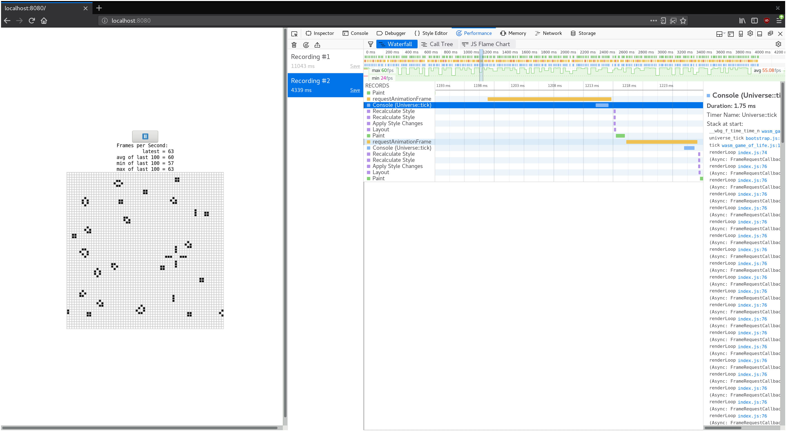

Rust 🦀 和 WebAssembly 🕸
这本小书描述了如何使用Rust和WebAssembly一起.
本书的针对人群?
本书适合任何有兴趣将 Rust 编译为 WebAssembly 的人，以便在 Web 上获得快速,可靠的代码。您应该了解过一些 Rust，并熟悉 JavaScript，HTML 和 CSS。不需要你是任何专家.
不知道 Rust 呢?先浏览 Rust 编程语言 开始.
不懂 JavaScript，HTML 或 CSS? 在 MDN 上了解它们.
怎么读呢
你应该先读Rust 和 WebAssembly 合作的动机，以及熟悉下背景和概念。
该教程是从头到尾阅读。您应该遵循:自己编写，编译和运行教程代码。如果您之前没有使用 Rust 和 WebAssembly，请执行本教程!
该参考部分可以按任何顺序阅读。
**💡 提示:**您可以通过单击页面顶部的 🔍 图标，或按下来
s键搜索本书。
帮助此书
这本书是开源的! 找个拼写错误? 我们忽略了什么吗? 向我们发送拉动请求!
为什么要 Rust 和 WebAssembly 合作？
高级人体工程学的底层控制
JavaScript Web 应用程序很难获得，并保持可靠的性能。JavaScript 的动态类型系统和垃圾回收暂停没有帮助。如果您不小心徘徊在 JIT 的快乐路径上，看似很小的代码更改可能导致严重的性能退化。
Rust 为程序员提供了低层控制和可靠的性能。它不受 病态 JavaScript 的非确定性垃圾收集暂停的影响。程序员可以以间接，单态化和内存布局，去控制。
小.wasm尺寸
代码大小非常重要，因为.wasm必须通过网络下载。Rust 缺少运行时，可以实现小的.wasm尺寸，因为没有包含像垃圾收集器的额外膨胀。您只需为实际使用的函数支付对应的代码大小。
不要重写一切
不需要丢弃现有的代码库。您可以从将性能最好的 JavaScript 函数移植到 Rust 开始，立即获益。如果你愿意，你甚至可以在那里停(调试)下来。
与他人相处得很好
Rust 和 WebAssembly 与现有的 JavaScript 工具集成。它支持 ECMAScript 模块，您可以继续使用您喜欢的工具，如 npm，Webpack 和 Greenkeeper.
你想要的便利设施
Rust 拥有开发人员所期望的现代化设施，例如:
-
强大的包管理
cargo， -
富有表现力(和零成本)的抽象，
-
和一个热情的社区!😊
背景和概念
WebAssembly
WebAssembly 是一个简单的机器模型和可执行格式extensive
specification(广泛的定义).
虽然它目前在 JavaScript 和 Web 社区 中受到关注， 但并没有限制它的运行环境。 因此，认为在不久的将来， wasm将可能成为在各种环境中， 重要的”便携式可执行”格式 (我们将花一些时间仔细研究一下wasm便携性功能，待本书进一步说明)。
今时今日，总得来说，wasm主要与 JavaScript 有关，它有很多种类 (包括浏览器和 Node.js) 。 由于 JS 广泛且易于访问， 我们将主要关注使用这些平台来运行 Rust 生成的wasm，但 其他语言的编译 可能会在不久的将来发布。
作为一种编程语言，WebAssembly由两种格式组成: 二进制格式和文本格式。 两者都代表了一种共同的结构， 尽管方式不同。 文本格式 (通常称为wat) 使用S 表达式-，与 Clojure 或 Racket 等语言有一些相似之处。 二进制格式wasm是一种较低级别(底层)的格式，它本身就是由 解释器运行的汇编代码.
作为参考，这里是一个wat格式的阶乘函数:
(module
(func $fac (param f64) (result f64)
get_local 0
f64.const 1
f64.lt
if (result f64)
f64.const 1
else
get_local 0
get_local 0
f64.const 1
f64.sub
call $fac
f64.mul
end)
(export "fac" (func $fac)))
如果你对wasm文件好奇，你可以使用wat2wasm demo看上面的代码.
WebAssembly有一个非常简单的内存模型。 目前，一个wasm模块可以访问单个”线性内存”，它本质上是一个固定数字类型的普通数组。 这个内存成长性是页面大小 (64K) 的倍数，并且不能缩小。
WebAssemblys 是什么?
WebAssembly(wasm)是一个简单的机器模型和可执行格式广泛的规范。设计成便携，紧凑，并以原生速度或接近原始速度执行。
作为一种编程语言，WebAssembly 由两种表示相同结构的格式组成，尽管方式不同:
-
- 该
.wat文字格式(称为wat为”WebAssembly Text”)使用S 表达式。与 Lisp 语言系列有一些相似之处。比如 Scheme 和 Clojure。
- 该
-
- 该
.wasm二进制格式是较低级别的，旨在由 wasm 虚拟机直接使用。它在概念上类似于 ELF 和 Mach-O。
- 该
作为参考，这里是一个阶乘函数wat:
(module
(func $fac (param f64) (result f64)
get_local 0
f64.const 1
f64.lt
if (result f64)
f64.const 1
else
get_local 0
get_local 0
f64.const 1
f64.sub
call $fac
f64.mul
end)
(export "fac" (func $fac)))
如果你对wasm文件好奇，你可以使用wat2wasm demo看上面的代码.
线性内存
WebAssembly有一个非常简单的内存模型。 目前，一个wasm模块可以访问单个”线性内存”，它本质上是一个固定数字类型的普通数组。 这个内存成长性是页面大小 (64K) 的倍数，并且不能缩小。
WebAssembly 是否仅给到 Web?
虽然它目前在 JavaScript 和 Web 社区 中受到关注， 但并没有限制它的运行环境。 因此，认为在不久的将来， wasm将可能成为在各种环境中， 重要的”便携式可执行”格式 (我们将花一些时间仔细研究一下wasm便携性功能，待本书进一步说明)。
今时今日，总得来说，wasm主要与 JavaScript 有关，它有很多种类 (包括浏览器和 Node.js) 。 由于 JS 广泛且易于访问， 我们将主要关注使用这些平台来运行 Rust 生成的wasm，但 其他语言的编译 可能会在不久的将来发布。
教程: 康威的生命游戏
这是一个用 Rust 和 WebAssembly 实现的教程康威的生命游戏.
谁是 康威-ConWay 我怎么知道 ❓
本教程适合谁?
本教程适用于 已经具有基本 Rust 和 JavaScript 经验 的任何人,并希望学习如何一起使用 Rust,WebAssembly 和 JavaScript.
阅读和编写基本的 Rust,JavaScript 和 HTML 应该会很舒服. 你绝对不需要成为专家才能懂.
我会学到什么?
-
怎样设置 Rust 工具链, 且将其编译为 WebAssembly
-
用于由 Rust, WebAssembly, JavaScript, HTML, 和 CSS 开发的多语言程序工作流程
-
怎样设计 让 Rust 和 WebAssembly 最优化的 API, 当然还有 JavaScript
-
怎样调试从 Rust 编译而来的 WebAssembly 模块
-
怎样对 Rust 和 WebAssembly 的程序进行时间分析, 让它变得更快
-
怎样对 Rust 和 WebAssembly 的程序进行大小分析, 让它变小和网络下载速度更快
安装
这个章节讲述的是: 怎样设置将 Rust 编译成 WebAssembly 和糅合到 JavaScript 的工具链
Rust 工具链
您将需要标准的 Rust 工具链,包括rustup,rustc,和cargo
Rust 和 WebAssembly 的使用在 Rust 发布火车上稳定运行! 这意味着我们不需要任何实验性功能标志。但是,我们确实需要 Rust 1.30 或打上版本。
wasm-pack
wasm-pack是您构建,测试和发布 Rust 生成的 WebAssembly 的一站式商店.
cargo-generate
cargo-generate通过利用预先存在的 git 存储库作为模板，帮助您快速启动并运行新的 Rust 项目。
安装cargo-generate使用此命令:
cargo install cargo-generate
npm
npm是 JavaScript 的包管理器. 我们将使用它来安装和运行 JavaScript 捆绑器 和 开发服务器. 在本教程结束时,我们将发布我们编译的.wasm到了npm注册表中.
如果你已经拥有npm安装,使用此命令确保它是最新的:
npm install npm@latest -g
你好,世界!
本节将向您展示如何构建和运行您的第一个 Rust 和 WebAssembly 程序:一个 alert “Hello,World!”的网页。
在开始之前，确保你已经遵照了安装说明。
克隆项目模板
项目模板预先配置了默认值，因此您可以快速构建，集成和打包 Web 代码.
使用以下命令，克隆项目模板:
cargo generate --git https://github.com/rustwasm/wasm-pack-template
这应该会提示您输入新项目的名称。我们会用**“wasm-game-of-life”**.
里面有什么
进入新的wasm-game-of-life项目，让我们来看看它的内容:
wasm-game-of-life/
├── Cargo.toml
├── LICENSE_APACHE
├── LICENSE_MIT
├── README.md
└── src
├── lib.rs
└── utils.rs
我们来详细介绍几个这样的文件.
wasm-game-of-life/Cargo.toml
该Cargo.toml文件是cargo的 指定依赖项和元数据，Cargo 则是 Rust 的包管理器和构建工具。这个预先配置了一个wasm-bindgen依赖项，我们将在后面深入研究一些可选的依赖项，和正确初始化crate-type以生成.wasm库。
wasm-game-of-life/src/lib.rs
该src/lib.rs文件 Rust 包的根，我们要编译成 WebAssembly 的。它用wasm-bindgen与 JavaScript 交互。它导入了window.alert的 JavaScript 函数，并导出为这个名为greet的 Rust 函数，用于警告(alert)一个问候(greet)消息。
#![allow(unused)] fn main() { extern crate cfg_if; extern crate wasm_bindgen; mod utils; use cfg_if::cfg_if; use wasm_bindgen::prelude::*; cfg_if! { // 当 `wee_alloc` 特性启用, 使用 `wee_alloc` 作为全局分配器。 if #[cfg(feature = "wee_alloc")] { extern crate wee_alloc; #[global_allocator] static ALLOC: wee_alloc::WeeAlloc = wee_alloc::WeeAlloc::INIT; } } #[wasm_bindgen] extern { fn alert(s: &str); } #[wasm_bindgen] pub fn greet() { alert("Hello, wasm-game-of-life!"); } }
wasm-game-of-life/src/utils.rs
该src/utils.rs模块提供了常用的实用函数，让 Rust 编译成 WebAssembly 来得更容易。我们将在本教程后面详细介绍其中一些实用函数，例如我们查看的内容调试我们的 wasm 代码,但我们现在可以先略过。
构建项目
我们用wasm-pack，是根据以下构建步骤:
- 确保我们有 Rust 1.30 或打上版本，通过
rustup安装wasm32-unknown-unknown目标(target), - 用
cargo将我们的 Rust 的源 编译为 WebAssembly 的.wasm二进制文件, - 为 Rust 生成的 WebAssembly 使用
wasm-bindgen，生成 JavaScript API.
要完成所有这些操作，请在项目目录中，运行此命令:
wasm-pack build
构建完成后，我们可以在pkg目录中，找到它的工件，它应该有这些内容:
pkg/
├── package.json
├── README.md
├── wasm_game_of_life_bg.wasm
├── wasm_game_of_life.d.ts
└── wasm_game_of_life.js
该README.md文件是从主项目复制的，但其他文件是新来的。
wasm-game-of-life/pkg/wasm_game_of_life_bg.wasm
该.wasm文件 是 Rust 编译器从 Rust 源生成的 WebAssembly 二进制文件。其包含 wasm 编译版本(具有所有 Rust 函数和数据)。例如,它具有导出的”greet”函数.
wasm-game-of-life/pkg/wasm_game_of_life.js
该.js文件是由wasm-bindgen生成的，并包含 JavaScript 胶水，其用于将 DOM 和 JavaScript 函数导入 Rust，并向 WebAssembly 函数公开一个很好的 API 到 JavaScript。例如，有一个 JavaScript 的greet函数，其包裹着从 WebAssembly 模块导出的greet函数。就现在而言，这胶水并没有做太多，但是当我们开始在 wasm 和 JavaScript 之间，来回传递更多有趣的值时，它将有助于将这些值传过边界。
import * as wasm from './wasm_game_of_life_bg';
// ...
export function greet() {
return wasm.greet();
}
wasm-game-of-life/pkg/wasm_game_of_life.d.ts
该.d.ts文件包含给 JavaScript 胶水的TypeScript类型声明。如果您使用的是 TypeScript，可以检查对 WebAssembly 函数的调用类型，并且您的 IDE 可以提供自动完成和建议!如果您不使用 TypeScript，则可以安全地忽略此文件。
export function greet(): void;
wasm-game-of-life/pkg/package.json
该package.json文件 包含有关生成的 JavaScript 和 WebAssembly 包的元数据。npm 和 JavaScript 捆绑包使用它来确定包，包名，版本和一堆其他东西之间的依赖关系。它帮助我们与 JavaScript 工具集成，并允许我们将我们的包发布到 npm。
{
"name": "wasm-game-of-life",
"collaborators": ["Your Name <your.email@example.com>"],
"description": null,
"version": "0.1.0",
"license": null,
"repository": null,
"files": ["wasm_game_of_life_bg.wasm", "wasm_game_of_life.d.ts"],
"main": "wasm_game_of_life.js",
"types": "wasm_game_of_life.d.ts"
}
将其放入网页
拿我们的wasm-game-of-life去打包，并在网页中使用它，我们使用该create-wasm-appJavaScript 项目模板.
在wasm-game-of-life目录中，运行此命令:
npm init wasm-app www
这就是我们新的wasm-game-of-life/www子目录，所包含的:
wasm-game-of-life/www/
├── bootstrap.js
├── index.html
├── index.js
├── LICENSE-APACHE
├── LICENSE-MIT
├── package.json
├── README.md
└── webpack.config.js
再一次,让我们仔细看看其中的一些文件。
wasm-game-of-life/www/package.json
这个package.json预配置了webpack和webpack-dev-server依赖项,以及hello-wasm-pack依赖，这是已发布到 npm 的wasm-pack-template包初始版本。
wasm-game-of-life/www/webpack.config.js
此文件配置 webpack 及其本地开发服务器。它是预配置的，你根本不需要调整它，就可以使用 webpack 及其本地开发服务器。
wasm-game-of-life/www/index.html
这是网页的根 HTML 文件。它除了加载bootstrap.js之外，没有其他作用，就是装着index.js的薄膜。
<!DOCTYPE html>
<html>
<head>
<meta charset="utf-8" />
<title>Hello wasm-pack!</title>
</head>
<body>
<script src="./bootstrap.js"></script>
</body>
</html>
wasm-game-of-life/www/index.js
该index.js是我们网页的 JavaScript 的主要入口点。它导入了hello-wasm-packnpm 包，包含默认wasm-pack-template的 WebAssembly 编译 和 JavaScript 胶水，然后调用hello-wasm-pack的greet函数。
import * as wasm from 'hello-wasm-pack';
wasm.greet();
安装依赖项
首先，通过运行在wasm-game-of-life/www子目录内npm install，确保安装本地开发服务器及其依赖项:
npm install
此命令只需运行一次，将安装webpackJavaScript 捆绑器 及其开发服务器。
注意
webpack，并不是 Rust 和 WebAssembly 的必需品,它只是我们为方便起见，而选择的捆绑器和开发服务器。Parcel 和 Rollup 也可以支持将 WebAssembly 导入为 ECMAScript 模块.
使用我们www中的本地wasm-game-of-life包
不是使用来自 npm 的hello-wasm-pack包，而是想使用我们的本地wasm-game-of-life包。这将使我们能够逐步开发我们的生命游戏程序。
首先，在wasm-game-of-life/pkg目录的里面，运行npm link，以便本地包可以被其他本地包依赖，而不需要将它们发布到 npm:
npm link
🐞
npm link后，你是否收到EACCESS或运行时的权限错误了吗?请查看，如何使用npm来防止权限错误.
第二，要使用来自www的，已npm link版本的wasm-game-of-life，通过在wasm-game-of-life/www中运行此命令:
npm link wasm-game-of-life
最后，修改wasm-game-of-life/www/index.js，去导入wasm-game-of-life而不是hello-wasm-pack包:
import * as wasm from 'wasm-game-of-life';
wasm.greet();
我们的网页，现已准备好在本地供给!
本地供给
接下来，为开发服务器打开一个新终端。在新终端中运行服务器，我们让它在后台运行，并且不会阻止我们在此期间运行其他命令。在新终端中，从wasm-game-of-life/www目录内部运行此命令:
npm run start
浏览 Web 浏览器http://localhost:8080/你应该收到一条警告(alert)信息:

任何时候你做出改变，并希望它们反映在http://localhost:8080/,只是在wasm-game-of-life目录内，重新运行wasm-pack build命令。
演示
-
修改
wasm-game-of-life/src/lib.rs中的greet函数，让其拿一个name: &str，这是可以自定义警报消息的参数，并在wasm-game-of-life/www/index.js内部，将您的名称传递给greet函数，让新版本发挥作用。用wasm-pack build，重建.wasm二进制，然后刷新http://localhost:8080/在您的 Web 浏览器中，您应该看到自定义的问候语!Answer
新版本
wasm-game-of-life/src/lib.rs的greet函数:#![allow(unused)] fn main() { #[wasm_bindgen] pub fn greet(name: &str) { alert(&format!("Hello, {}!", name)); } }在
wasm-game-of-life/www/index.js中新的greet调用:wasm.greet('Your Name');
康威生命游戏规则
注意: 如果您已熟悉康威的生命游戏及其规则,请跳到下一部分!
生命游戏的宇宙是方形单元的无限二维正交网格,每个方格单元处于两种可能状态之一,活着或死亡,或”填充”或”未填充”. 每个细胞与其八个邻居相互作用 - 这八个邻居是水平,垂直或对角相邻的细胞. 在每个步骤中,发生以下转换:
- 当前细胞为存活状态时，当周围低于 2 个（不包含 2 个）存活细胞时， 该细胞变成死亡状态。（模拟生命数量稀少）
- 当前细胞为存活状态时，当周围有 2 个或 3 个存活细胞时， 该细胞保持原样。
- 当前细胞为存活状态时，当周围有 3 个以上的存活细胞时，该细胞变成死亡状态。（模拟生命数量过多）
- 当前细胞为死亡状态时，当周围有 3 个存活细胞时，该细胞变成存活状态。 （模拟繁殖）
可以把最初的细胞结构定义为种子，当所有在种子中的细胞同时被以上规则处理后, 可以得到第一代细胞图。按规则继续处理当前的细胞图，可以得到下一代的细胞图，周而复始。
考虑以下初始 Universe:

我们可以通过考虑每个单元来计算下一代. 左上角的单元格已经死了. 规则 (4) 是适用于死细胞的唯一转换规则. 但是,因为左上角的单元格没有正好三个活动邻居,所以转换规则不适用,并且它在下一代中仍然不存在. 对于 第一行 中的每个其他单元也是如此.
当我们考虑第二列,第三列中的活细胞时,事情变得有趣. 对于活细胞,前三个规则中的任何一个都可能适用. 在这个黑单元的情况下,它只有下面一个活的邻居,因此规则 (1) 适用: 这个单元将在下一代中死亡. 同样的命运也对应着最下面的活黑细胞.
中间活细胞有两个活的邻居: 顶部和底部活细胞. 这意味着规则 (2) 适用,并且它仍然存在于下一代.
最后有趣的案例是中间活细胞左侧和右侧的死细胞. 这三个活细胞都是这些细胞的邻居,这意味着规则 (4) 适用,并且这些细胞将在下一代中存活.
把它们放在一起,我们在下一个滴答之后得到这个宇宙:

从这些简单的,确定性的规则出现,奇怪和令人兴奋的行为出现了:
| Gosper 的滑翔机枪 | 脉冲星 | 太空飞船 |
|---|---|---|
 |  |  |
练习
- 手动计算我们的示例 Universe 的下一个滴答. 注意像什么?
答案
它应该是示例宇宙的初始状态:
这个模式是 周期性的：每两个滴答，它就返回到初始状态。
- 你能找到一个稳定的初始宇宙吗? 也就是说,每一代人都是一样的宇宙.
答案
有无数稳定的宇宙！平凡稳定的宇宙是空的宇宙。一个二乘二平方的活细胞也是一个稳定的宇宙。
There are an infinite number of stable universes! The trivially stable universe is the empty universe. A two-by-two square of live cells is also a stable universe.
实现康威的生命游戏
设计
在我们深入之前，我们有一些设计选择需要考虑。
无限的宇宙
生命游戏是在无限的宇宙中进行的，但我们没有无限的内存和计算能力。 解决这个相当恼人的限制，通常有以下三种风格:
1。 跟踪宇宙的哪个子集发生了有趣的事情，并根据需要，扩展此区域。 在最坏的情况下，这种扩展是无限制的，实现将变得越来越慢，最终耗尽内存。
2。 创建固定大小的 Universe，边缘上的单元格具有较少的邻居 比中间的单元格。 这种方法的缺点是无限 像滑翔机一样到达宇宙尽头的模式被扼杀了。
3。 创建一个固定大小的周期性 Universe，其中边缘上的单元格具有环绕到 Universe 另一侧的邻居。 因为邻居环绕宇宙的边缘，滑翔机可以永远运行。
我们将实现第三种选择。
连接 Rust 和 JavaScript
⚡ 这是从本教程中，你要理解和获取的最重要的概念之一!
JavaScript 的垃圾收集堆 - Object，Array和 DOM 节点 是被分配的 - 不同于 WebAssembly 的线性内存空间，我们的 Rust 值 存在于其中。 WebAssembly 目前无法直接访问垃圾收集堆 (截至 2018 年 4 月，预计会随“主机绑定 host-bindings”提案而改变) 。 另一方面，JavaScript 可以读取和写入 WebAssembly 线性存储空间，但仅作为一个ArrayBuffer标量值 (u8，i32，f64等等...) WebAssembly 函数也接受，并返回标量值. 这些是构成 WebAssembly 和 JavaScript 通信 的所有构建块。
wasm_bindgen定义了，如何与跨边界复合结构一起工作的共识。 它涉及封装 Rust 结构，将指针包装在 JavaScript 类 中以实现可用性，或者 从 Rust 索引到 一个 JavaScript 对象表格。 wasm_bindgen非常方便，但它不需要考虑我们的数据表示，以及跨越这个边界传递什么值和结构.。相反，将其视为实现您选择的接口设计的工具。
在设计 WebAssembly 和 JavaScript 之间的接口时，我们希望针对以下属性进行优化:
-
**最小化 WebAssembly 线性存储器的 进/出复制 。**不必要的副本会产生不必要的开销。
-
**最小化序列化和反序列化。**与复制类似，序列化和反序列化也会产生开销，并且通常也会进行复制。 如果我们可以将不透明的控制，传递给数据结构 - 而不是在一边序列化后，将其复制到 WebAssembly 线性存储器中的某个已知位置，并在另一边进行反序列化 - 我们通常可以减少大量开销。
wasm_bindgen帮助我们 定义和使用 JavaScript 的Object或 已封装的 Rust 结构的不透明控制。
作为一般的经验法则，一个好的 JavaScript↔WebAssembly 接口设计，通常是将大型，长寿命的数据结构实现，为生活在 WebAssembly 线性内存 中的 Rust 类型，并作为不透明控制暴露给 JavaScript. JavaScript 调用，这些持有不透明控制的导出了的 WebAssembly 函数，转换数据，执行繁重的计算，查询数据，最终返回一个小的可复制结果。 通过仅返回计算的小结果，我们避免在 JavaScript 垃圾收集堆和 WebAssembly 线性存储器 之间，来回复制和序列化所有内容。
在我们的生命游戏中连接 Rust 和 JavaScript
让我们首先列举一些要避免的危险。 我们不希望在每次tick，都将整个 Universe 复制到 WebAssembly 线性内存。 我们不希望为宇宙中的每个单元分配对象，也不想强加一个跨边界调用来读写每个单元。
这给我们留下了什么? 我们可以将 Universe 表示为，位于 WebAssembly 线性内存中的平面数组，并且每个单元格都有一个字节。 0是一个死单元格，1是一个活单元格。
以下是 4 x 4 宇宙在内存中的样子:

要在 Universe 的给定行和列中，查找单元格的数组索引，我们可以使用以下公式:
index(row, column, universe) = row * width(universe) + column
我们有几种方法可以将 Universe 的单元格暴露给 JavaScript。 首先，我们为Universe添加std::fmt::Display实现，可以用来产生 一个单元格的 RustString ，渲染为文本字符。 然后将此 Rust String 从 WebAssembly 线性内存 复制到 JavaScript 的垃圾回收堆中 的 JavaScript String 中，然后通过设置HTML的textContent显示。 在本章的后面，我们将推演这个实现，以避免在堆之间复制 Universe 的单元格，和渲染到<canvas>。
另一个可行的设计替代方案是， Rust 返回每次 tick 后，更改状态的每个单元格的列表，而不是将整个 Universe 暴露给 JavaScript。 好处在于，JavaScript 在渲染时不需要遍历整个 Universe ，只需要相关的子集。 问题权衡，在于这种 基于 delta 的设计实现起来，稍微困难一些。
Rust 实现
在上一章中，我们克隆了一个初始项目模板. 我们现在将修改该项目模板.
让我们开始删除 wasm-game-of-life/src/lib.rs的 alert导入 和greet 函数，并用单元格的类型定义替换它们:
#![allow(unused)] fn main() { #[wasm_bindgen] #[repr(u8)] #[derive(Clone, Copy, Debug, PartialEq, Eq)] pub enum Cell { Dead = 0, Alive = 1, } }
重要的是我们拥有#[repr(u8)]，以便每个单元格表示为单个字节。 同样重要的是Dead代表0，那个Alive是1，这样我们就可以轻松地计算一个单元格的活邻居。
接下来，让我们定义宇宙(Universe)。 宇宙具有宽度和高度，以及长度为width * height的单元格向量。
#![allow(unused)] fn main() { #[wasm_bindgen] pub struct Universe { width: u32, height: u32, cells: Vec<Cell>, } }
要访问 给定行和列 的单元格，我们将 行和列 转换为 单元格向量 的索引，如前所述:
#![allow(unused)] fn main() { impl Universe { fn get_index(&self, row: u32, column: u32) -> usize { (row * self.width + column) as usize } // ... } }
为了计算单元格的下一个状态，我们需要计算 其邻居有多少 是活着的。 我们来写一个live_neighbor_count方法，做到这一点!
#![allow(unused)] fn main() { impl Universe { // ... fn live_neighbor_count(&self, row: u32, column: u32) -> u8 { let mut count = 0; for delta_row in [self.height - 1, 0, 1].iter().cloned() { for delta_col in [self.width - 1, 0, 1].iter().cloned() { if delta_row == 0 && delta_col == 0 { continue; } let neighbor_row = (row + delta_row) % self.height; let neighbor_col = (column + delta_col) % self.width; let idx = self.get_index(neighbor_row, neighbor_col); count += self.cells[idx] as u8; } } count } } }
live_neighbor_count方法使用 deltas 和 modulo 来避免宇宙的边缘情况。 当应用-1的增量时，我们添加
self.height - 1，然后让 modulo 做它的事，而不是试图减去1。 row和column可以为0，如果我们试图减去1， 从他们来看，会有一个 无符号整数 下溢。
现在我们拥有了当前计算下一代所需的一切! 每个游戏的规则遵循 转换条件用match直接表达。 另外，因为我们希望 JavaScript 控制 tick 时间，我们将把这个方法放在一个#[wasm_bindgen]注释下，以便它暴露给 JavaScript。
#![allow(unused)] fn main() { /// 公有方法, 暴露给 JavaScript. #[wasm_bindgen] impl Universe { pub fn tick(&mut self) { let mut next = self.cells.clone(); for row in 0..self.height { for col in 0..self.width { let idx = self.get_index(row, col); let cell = self.cells[idx]; let live_neighbors = self.live_neighbor_count(row, col); let next_cell = match (cell, live_neighbors) { // 规则 1: 任何少于两个邻居的活细胞死亡，就好像是由于人口不足造成的一样。. (Cell::Alive, x) if x < 2 => Cell::Dead, // 规则 2: 任何一个有两个或三个邻居的活体细胞都能传到下一代。. (Cell::Alive, 2) | (Cell::Alive, 3) => Cell::Alive, // 规则 3: 任何居住着三个以上邻居的活细胞都会死亡，就好像是由于人口过剩。. (Cell::Alive, x) if x > 3 => Cell::Dead, // 规则 4:任何一个只有三个相邻的活细胞的死细胞都会变成活细胞，就像通过繁殖一样。. (Cell::Dead, 3) => Cell::Alive, // 所有其他单元格保持相同状态。 (otherwise, _) => otherwise, }; next[idx] = next_cell; } } self.cells = next; } // ... } }
到目前为止，宇宙的状态被表示为 单元格 的载体。 为了使这个可读，让我们实现一个基本的文本渲染器。 我们的想法是逐行将 Universe 写成文本，对于每个活着的单元格，打印 Unicode 字符◼️ (”黑色方格”) 。 对于死单元格，我们将打印◻️ (”白色方格”) 。
通过实现来自 Rust 标准库 的Displaytrait ，我们可以添加一种面向用户, 格式化结构的方法。 这也会自动给我们一个to_string方法.
#![allow(unused)] fn main() { use std::fmt; impl fmt::Display for Universe { fn fmt(&self, f: &mut fmt::Formatter) -> fmt::Result { for line in self.cells.as_slice().chunks(self.width as usize) { for &cell in line { let symbol = if cell == Cell::Dead { "◻️" } else { "◼️" }; write!(f, "{}", symbol)?; } write!(f, "\n")?; } Ok(()) } } }
最后，我们定义一个构造函数，用一个有趣的 活单元格和死单元格 模式来初始化宇宙，以及render方法:
#![allow(unused)] fn main() { /// Public methods, exported to JavaScript. #[wasm_bindgen] impl Universe { // ... pub fn new() -> Universe { let width = 64; let height = 64; let cells = (0..width * height) .map(|i| { if i % 2 == 0 || i % 7 == 0 { Cell::Alive } else { Cell::Dead } }) .collect(); Universe { width, height, cells, } } pub fn render(&self) -> String { self.to_string() } } }
有了这个，我们的生命游戏 Rust 实现的一半就完成了!
在wasm-game-of-life 目录内，通过运行wasm-pack build重新编译为 WebAssembly。
使用 JavaScript 渲染
首先，让我们添加一个用于渲染宇宙的<pre>元素到wasm-game-of-life/www/index.html，就放在 <script> 上好了:
<body>
<pre id="game-of-life-canvas"></pre>
<script src="./bootstrap.js"></script>
</body>
另外，我们想要这个<pre>，以网页中间为中心. 我们可以使用 CSS flex 来完成这项任务。 添加以下内容<style>，到index.html的<head>里面:
<style>
body {
position: absolute;
top: 0;
left: 0;
width: 100%;
height: 100%;
display: flex;
flex-direction: column;
align-items: center;
justify-content: center;
}
</style>
在wasm-game-of-life/www/index.js的顶端，让我们修复我们的导入来引入Universe，而不是旧的greet函数:
import {Universe} from './wasm_game_of_life';
另外，获取我们刚加的<pre>元素，并实例化新 Universe 的元素:
const pre = document.getElementById('game-of-life-canvas');
const universe = Universe.new();
JavaScript 运行在[一个requestAnimationFrame循环][requestanimationframe]。 在每次迭代中，它将当前的 Universe 绘制到<pre>，然后运行Universe::tick。
const renderLoop = () => {
pre.textContent = universe.render();
universe.tick();
requestAnimationFrame(renderLoop);
};
要开始渲染过程，我们所要做的就是为渲染循环的第一次迭代进行初始调用:
requestAnimationFrame(renderLoop);
确保你的开发服务器还在运行 (wasm-game-of-life/www目录中，执行 npm run start
) 和这就是http://localhost:8080/ 现在的样子:

直接从内存渲染到 Canvas
在 Rust 中生成 (和分配) 一个String， 然后有wasm-bindgen将其转换为有效的 JavaScript 字符串 ，来会生成 Universe 单元格 的不必要副本。 其实在 JavaScript 代码 知道 Universe 的宽度和高度，并且可以直接从 JavaScript 中读取 WebAssembly 线性内存 中的单元格字节， 我们就可以修改render方法，用来返回 单元数组的开头指针。
还有，我们将切换到使用Canvas API。 而不是渲染 unicode 文本。 我们将在本教程的其余部分中使用此设计。
首先，让我们把pre，换成了一个<canvas> (它也应该在<body>， <script>加载我们的 JavaScript 之前) :
wasm-game-of-life/www/index.html内，让我们把之前添加的<pre>换成准备渲染的一个<canvas>(它也应该在<body>， 在<script>加载我们的 JavaScript 之前):
<body>
<canvas id="game-of-life-canvas"></canvas>
<script src="./bootstrap.js"></script>
</body>
为了从 Rust 实现 中获取必要的信息，我们需要为 Universe 的宽度，高度和指向 其单元数组 的指针 添加更多的一些 getter函数。 所有这些都暴露在 JavaScript 中。添加这些内容wasm-game-of-life/src/lib.rs:
#![allow(unused)] fn main() { /// Public methods， exported to JavaScript. #[wasm_bindgen] impl Universe { // ... pub fn width(&self) -> u32 { self.width } pub fn height(&self) -> u32 { self.height } pub fn cells(&self) -> *const Cell { self.cells.as_ptr() } } }
接下来，在wasm-game-of-life/www/index.js，我们也从wasm-game-of-life导入Cell，和让我们定义 JavaScript 在渲染 Canvas 时将使用的一些常量:
import {Universe, Cell} from 'wasm-game-of-life';
const CELL_SIZE = 5; // px
const GRID_COLOR = '#CCCCCC';
const DEAD_COLOR = '#FFFFFF';
const ALIVE_COLOR = '#000000';
现在，让我们重写当前的 JS 代码 (导入除外) ，不再写入<pre>的textContent，而是专注在<canvas>:
// 构造 the universe， and get its width and height.
const universe = Universe.new();
const width = universe.width();
const height = universe.height();
// Give the canvas room for all of our cells and a 1px border
// around each of them.
const canvas = document.getElementById('game-of-life-canvas');
canvas.height = (CELL_SIZE + 1) * height + 1;
canvas.width = (CELL_SIZE + 1) * width + 1;
const ctx = canvas.getContext('2d');
const renderLoop = () => {
universe.tick();
drawGrid();
drawCells();
requestAnimationFrame(renderLoop);
};
为了在单元格之间绘制网格，我们绘制 一组等间隔 的 水平线 和 一组等间距 的 垂直线。 这些线 纵横交错 形成网格。
const drawGrid = () => {
ctx.beginPath();
ctx.lineWidth = 1 / window.devicePixelRatio;
ctx.strokeStyle = GRID_COLOR;
// Vertical lines.
for (let i = 0; i <= width; i++) {
ctx.moveTo(i * (CELL_SIZE + 1) + 1, 0);
ctx.lineTo(i * (CELL_SIZE + 1) + 1, (CELL_SIZE + 1) * height + 1);
}
// Horizontal lines.
for (let j = 0; j <= height; j++) {
ctx.moveTo(0, j * (CELL_SIZE + 1) + 1);
ctx.lineTo((CELL_SIZE + 1) * width + 1, j * (CELL_SIZE + 1) + 1);
}
ctx.stroke();
};
我们可以直接通过memory拿到 WebAssembly 的 线性内存， 而这个memory由原生 wasm 模块wasm_game_of_life_bg提供。为了绘制 单元格，我们拿到 universe's cells 的指针 ，构造一个覆盖单元格缓存的Uint8Array，迭代每个单元格，并分别根据 单元格是死还是活，绘制白色或黑色矩形。 通过使用 指针 和 覆盖，我们避免在每次tick上跨边界复制单元格。
// 文件顶部，导入 WebAssembly memory
import {memory} from './wasm_game_of_life_bg';
// ...
const getIndex = (row, column) => {
return row * width + column;
};
const drawCells = () => {
const cellsPtr = universe.cells(); // < universe's cells
const cells = new Uint8Array(memory.buffer, cellsPtr, width * height);
ctx.beginPath();
for (let row = 0; row < height; row++) {
for (let col = 0; col < width; col++) {
const idx = getIndex(row, col);
ctx.fillStyle = cells[idx] === DEAD ? DEAD_COLOR : ALIVE_COLOR;
ctx.fillRect(
col * (CELL_SIZE + 1) + 1,
row * (CELL_SIZE + 1) + 1,
CELL_SIZE,
CELL_SIZE
);
}
}
ctx.stroke();
};
要开始渲染过程，我们将使用与 上部分相同的代码 ，来开始渲染循环的第一次迭代:
requestAnimationFrame(renderLoop);
请注意，在执行requestAnimationFrame()之前，我们要调用drawGrid()和drawCells()。我们这样做的原因是，在我们进行修改之前，绘制宇宙的初始状态。如果我们改为简单地调用requestAnimationFrame(renderLoop)，我们最终得到的第一帧实际的绘制情况是，在第一次调用universe.tick()后，也就是这些单元格生命状态的第二次“tick”。
它工作了!
通过在根wasm-game-of-life目录中运行此命令，来重构建 WebAssembly 和绑定粘合剂:
wasm-pack build
确保您的开发服务器仍在运行。若没有，请从wasm-game-of-life/www目录内部再次启动:
npm run start
如果你刷新http://localhost:8080/，你应该受到令人兴奋的展示!

您可以 checkout chapter-one 分支 找到完整代码.
还有一个非常巧妙的算法，来实现生命游戏，叫做hashlife。 它使用积极的内存，实际上计算后代的时间越长，获得的指数级更快! 鉴于此，您可能想知道为什么我们在本教程中没有实现hashlife。 因为它超出了本文的范围，我们专注于 Rust 和 WebAssembly 集成，但我们强烈建议您自己去了解hashlife!
练习
-
使用单个太空飞船，初始化宇宙.
-
不是硬编码最初的宇宙，而是生成一个随机的，有五十五个单元格活着或死亡的机会.
提示:使用
js-sys箱导入Math.randomJavaScript 函数.答案
*首先，在 `wasm-game-of-life/Cargo.toml`添加依赖:*# ... [dependencies] js-sys = "0.3" # ...然后，使用
js_sys::Math::random翻转硬币的函数:#![allow(unused)] fn main() { extern crate js_sys; // ... if js_sys::Math::random() < 0.5 { // Alive... } else { // Dead... } } -
用 一个字节 表示 每个单元格 可以很容易地迭代单元格，但这是以浪费内存为代价的. 每个字节是 8 位，但我们只需要 一个位 来表示每个单元 是活还是死. 重构数据表示，以便每个单元，仅使用一个空格位.
答案
在 Rust 中，您可以使用fixedbitset箱子和它的FixedBitSet类型，来表示单元格，代替Vec<Cell>:
#![allow(unused)] fn main() { // 确保你添加此依赖到了 Cargo.toml! extern crate fixedbitset; use fixedbitset::FixedBitSet; // ... #[wasm_bindgen] pub struct Universe { width: u32, height: u32, cells: FixedBitSet, } }
可以通过以下方式调整 Universe 构造函数:
#![allow(unused)] fn main() { pub fn new() -> Universe { let width = 64; let height = 64; let size = (width * height) as usize; let mut cells = FixedBitSet::with_capacity(size); for i in 0..size { cells.set(i, i % 2 == 0 || i % 7 == 0); } Universe { width, height, cells, } } }
要更新宇宙的下一个 tick 中的单元格，我们使用FixedBitSet的set方法:
#![allow(unused)] fn main() { next.set(idx, match (cell, live_neighbors) { (true, x) if x < 2 => false, (true, 2) | (true, 3) => true, (true, x) if x > 3 => false, (false, 3) => true, (otherwise, _) => otherwise }); }
要将指向开头位的指针传递给 JavaScript，您可以转换FixedBitSet到切片，然后将切片转换为指针:
#![allow(unused)] fn main() { #[wasm_bindgen] impl Universe { // ... pub fn cells(&self) -> *const u32 { self.cells.as_slice().as_ptr() } } }
在 JavaScript 中，构建 Wasm 的内存成一个Uint8Array，与之前相同，只是数组的长度不再是width * height，而是width * height / 8，因为我们一个 位 有一个单元，而不是字节(8 位):
const cells = new Uint8Array(memory.buffer, cellsPtr, (width * height) / 8);
给出一个索引和Uint8Array，你可以确定是否使用以下函数设置 nth 位:
const bitIsSet = (n, arr) => {
let byte = Math.floor(n / 8);
let mask = 1 << n % 8;
return (arr[byte] & mask) === mask;
};
鉴于此，新版本drawCells看起来像这样:
const drawCells = () => {
const cellsPtr = universe.cells();
// 这时，已更新
const cells = new Uint8Array(memory.buffer, cellsPtr, (width * height) / 8);
ctx.beginPath();
for (let row = 0; row < height; row++) {
for (let col = 0; col < width; col++) {
const idx = getIndex(row, col);
// This is updated!
ctx.fillStyle = bitIsSet(idx, cells) ? ALIVE_COLOR : DEAD_COLOR;
ctx.fillRect(
col * (CELL_SIZE + 1) + 1,
row * (CELL_SIZE + 1) + 1,
CELL_SIZE,
CELL_SIZE
);
}
}
ctx.stroke();
};
测试 Conway’s 生命游戏
现在我们在浏览器中使用 JavaScript 运用 Rust(编译出 wasm) 实现了生命游戏渲染，接下来让我们来谈谈测试 Rust 生成的 WebAssembly 函数。
我们要测试一下tick函数，以确保它为我们提供预期的输出。
下一步,我们将要在wasm_game_of_life/src/lib.rs文件的impl Universe代码区块内部，创建一些 setter 和 getter 函数。我们准备创建一个set_width和 一个set_height函数，所以我们可以创建不同大小的Universe(宇宙)。
#![allow(unused)] fn main() { #[wasm_bindgen] impl Universe { // ... /// 设置 宇宙 的 宽度. /// /// 将所有的单元，重新设为 死亡 状态 pub fn set_width(&mut self, width: u32) { self.width = width; self.cells = (0..width * self.height).map(|_i| Cell::Dead).collect(); } /// 设置 宇宙 的 高度. /// /// 将所有的单元，重新设为 死亡 状态 pub fn set_height(&mut self, height: u32) { self.height = height; self.cells = (0..self.width * height).map(|_i| Cell::Dead).collect(); } } }
我们打算创造另一个，一样是wasm_game_of_life/src/lib.rs文件中impl Universe代码区块内部，但没有#[wasm_bindgen]属性。我们需要一些测试所需的函数，但不希望这些函数给到我们的 JavaScript。Rust 生成的 WebAssembly 函数无法返回 借用的 引用。尝试下使用属性编译 Rust 生成的 WebAssembly，并查看您获得的错误。
我们将编写实现get_cells，主要用来得到一个Universe中的cells的内容。我们还会写一个set_cells函数，这样我们才可以设置一个Universe中，特定行列的cells为Alive.(活的)
#![allow(unused)] fn main() { impl Universe { /// 给出 全部宇宙 死和活的值 pub fn get_cells(&self) -> &[Cell] { &self.cells } /// 通过传递 作为数组的 单元(行与列)，可在一个宇宙内设置该单元为活的 pub fn set_cells(&mut self, cells: &[(u32, u32)]) { for (row, col) in cells.iter().cloned() { let idx = self.get_index(row, col); self.cells[idx] = Cell::Alive; } } } }
现在我们要在wasm_game_of_life/tests/web.rs文件中创建我们的测试。
在我们这样做之前,文件中已经有一个工作测试。您可以通过在wasm-game-of-life目录里面，运行wasm-pack test --chrome --headless确认 Rust 生成的 WebAssembly 测试是否正常工作。你也可以使用--firefox,--safari,和--node在这些浏览器中测试代码的选项.
在wasm_game_of_life/tests/web.rs文件里面，我们需要导出我们的wasm_game_of_life箱子和Universe类型.
#![allow(unused)] fn main() { extern crate wasm_game_of_life; use wasm_game_of_life::Universe; }
在wasm_game_of_life/tests/web.rs文件里面，我们要创建一些太空船(spaceship)构建器函数。
先要一个 input_spaceship(输入的宇宙飞船) ，这样我们会让tick函数开启调用，还有我们在一次 tick 后，要获取 expected_spaceship(预期的宇宙飞船) 。我们选择了想要初始化为Alive的单元格，在input_spaceship函数中创造我们的宇宙飞船。在手动的input_spaceship过了一次 tick 后， 宇宙飞船的位置就在expected_spaceship函数。您可以自己确认下，在一次 tick 后，输入飞船的单元与预期的相同.
#![allow(unused)] fn main() { #[cfg(test)] pub fn input_spaceship() -> Universe { let mut universe = Universe::new(); universe.set_width(6); universe.set_height(6); universe.set_cells(&[(1,2), (2,3), (3,1), (3,2), (3,3)]); universe } #[cfg(test)] pub fn expected_spaceship() -> Universe { let mut universe = Universe::new(); universe.set_width(6); universe.set_height(6); universe.set_cells(&[(2,1), (2,3), (3,2), (3,3), (4,2)]); universe } }
现在我们实现test_tick函数。首先,我们创建input_spaceship()和expected_spaceship()，各一个实例。然后,我们在input_universe上调用tick。最后,我们使用了assert_eq!宏来调用get_cells()，确保input_universe和expected_universe有同样的Cell数组值。我们加上了#[wasm_bindgen_test]属性到我们的代码块，所以我们可以测试 Rust 生成的 WebAssembly 代码，并使用wasm-build test测试 WebAssembly 代码。
#![allow(unused)] fn main() { #[wasm_bindgen_test] pub fn test_tick() { // 让我们创建一个小点 的宇宙，带着我们微飞船测试吧! let mut input_universe = input_spaceship(); // 我们宇宙的一次滴答后，我们的飞船应该变成了这样 let expected_universe = expected_spaceship(); // 调用 `tick` ，然后看看 `Universe`的单元是否一致 input_universe.tick(); assert_eq!(&input_universe.get_cells(), &expected_universe.get_cells()); } }
在wasm-game-of-life目录中，通过运行wasm-pack test --firefox --headless运行测试。
调试
在我们编写更多代码之前，我们需要一些，在出现问题时使用的调试工具。花一点时间回顾下参考页面：可用于调试 Rust 生成的 WebAssembly 的工具和方法。
为恐慌(panic)，启用日志记录，
如果我们的代码发生恐慌，我们希望在开发者控制台中，显示信息性错误消息。
我们的wasm-pack-template附带一个console_error_panic_hook箱，其有个可选的，默认启用的依赖项，你可在wasm-game-of-life/src/utils.rs看到已配置了。我们需要做的就是在初始化函数或常用代码路径中安装钩子。我们可以在wasm-game-of-life/src/lib.rs中的，Universe::new构造函数里面调用它：
#![allow(unused)] fn main() { pub fn new() -> Universe { utils::set_panic_hook(); // ... } }
记录功能，添加到我们的生命游戏中
运用console.log函数的方式，是由web-sys添加一些记录日志，记录我们Universe::tick函数的每个细胞。
首先，在wasm-game-of-life/Cargo.toml添加web-sys依赖项，并启用它的"console"功能(特性)：
[dependencies.web-sys]
version = "0.3"
features = [
"console",
]
为了更符合偷懒，我们将包装console.log到类println!形式的宏中：
#![allow(unused)] fn main() { extern crate web_sys; // 一个 macro(宏) 提供 `println!(..)`-形式 语法，给到 `console.log` 日志功能. macro_rules! log { ( $( $t:tt )* ) => { web_sys::console::log_1(&format!( $( $t )* ).into()); } } }
现在，我们可以在 Rust 代码中，插入log调用，开始 console 的信息记录。例如，要记录每个单元(cell)的状态，实时邻居计数，以及下一个状态，我们可以修改wasm-game-of-life/src/lib.rs像这样：
diff --git a/src/lib.rs b/src/lib.rs
index f757641..a30e107 100755
--- a/src/lib.rs
+++ b/src/lib.rs
@@ -123,6 +122,14 @@ impl Universe {
let cell = self.cells[idx];
let live_neighbors = self.live_neighbor_count(row, col);
+ log!(
+ "cell[{}, {}] is initially {:?} and has {} live neighbors",
+ row,
+ col,
+ cell,
+ live_neighbors
+ );
+
let next_cell = match (cell, live_neighbors) {
// Rule 1: Any live cell with fewer than two live neighbours
// dies, as if caused by underpopulation.
@@ -140,6 +147,8 @@ impl Universe {
(otherwise, _) => otherwise,
};
+ log!(" it becomes {:?}", next_cell);
+
next[idx] = next_cell;
}
}
在每个 Tick 之间，能用调试器暂停下
浏览器的步进调试器，对检查 Rust 生成的 WebAssembly 与 JavaScript 的交互 非常有用。
例如，我们可用调试器，在我们的renderLoop函数每次迭代时，暂停。只需要放置一个 JavaScript 的 debugger;声明，位于我们的universe.tick()之上。
const renderLoop = () => {
debugger;
universe.tick();
drawGrid();
drawCells();
requestAnimationFrame(renderLoop);
};
这为我们提供了一个方便的检查点，用于检查记录的消息，并将当前渲染的’帧’与前一’帧’进行比较。

练习
-
添加日志记录到
tick函数，这样就可以记录每个单元格的行和列，知道其状态是从活转换为死，或是相反。 -
声明一个
panic!()到Universe::new方法里面。在 Web 浏览器的 JavaScript 调试器中，检查恐慌的回溯。要做到禁用调试符号，只用不带console_error_panic_hook可选依赖项，重新构建就好了，并再次检查堆栈跟踪。可以吧！？
增加交互性
我们将通过在 Game of Life 实现中, 添加一些交互功能来继续探索 JavaScript 和 WebAssembly 接口。 我们想让用户通过单击，来切换单元格是活的还是死亡，并允许暂停游戏，这使得绘制单元格模式更加容易。
暂停和恢复游戏
让我们添加一个按钮，来切换游戏是正在播放还是暂停。 index.html的<canvas>上方添加按钮:
<button id="play-pause"></button>
在 JavaScript 中，我们将进行以下更改:
-
跟踪最新调用
requestAnimationFrame返回的标识符, 以便我们可以以此，调用cancelAnimationFrame来取消那个标识符动画。 -
单击播放/暂停按钮时，检查我们是否具有排队动画帧的标识符。 1.点击时，游戏当前正在播放，取消动画帧
renderLoop，有效地暂停游戏. 2.点击时，当前暂停，若没有排队动画帧的标识符，我们想运行requestAnimationFrame恢复比赛。
因为 JavaScript 正在驱动 Rust 和 WebAssembly，这就是我们需要做的所有，不过我们不需要更改 Rust 源代码。
我们介绍一下animationId变量来跟踪requestAnimationFrame返回的标识符。 当没有排队的动画帧时，我们将此变量设置为null。
let animationId = null;
// 这个函数与之前的一样, 除了把`requestAnimationFrame`的结果
// 分配到 `animationId`.
const renderLoop = () => {
universe.tick();
drawCells();
drawGrid();
animationId = requestAnimationFrame(renderLoop);
};
在任何时刻，我们都可以通过animationId检查游戏，来判断游戏是否暂停:
const isPaused = () => {
return animationId === null;
};
现在，当点击 播放/暂停 按钮时，我们会检查游戏当前是暂停还是正在播放，要么继续播放renderLoop动画，要么取消下一个动画帧。
此外，我们更新按钮的文本图标，以反映按钮在下次单击时将执行的操作。
const playPauseButton = document.getElementById('play-pause');
const play = () => {
playPauseButton.textContent = '⏸';
renderLoop();
};
const pause = () => {
playPauseButton.textContent = '▶';
cancelAnimationFrame(animationId);
animationId = null;
};
playPauseButton.addEventListener('click', event => {
if (isPaused()) {
play();
} else {
pause();
}
});
最后，我们直接调用requestAnimationFrame(renderLoop)用来启动之前的游戏及其动画，
但我们想用play替换它，以便按钮获得正确的初始文本图标。
// This used to be `requestAnimationFrame(renderLoop)`.
play();
刷新http://localhost:8080/，现在你应该可以通过点击按钮来暂停和恢复游戏!
切换一个 Cell 的状态"click"活动
现在我们可以暂停游戏了，现在是时候添加通过点击它们来改变细胞的能力了。
切换单元格是将其状态从活动状态转换为死亡状态，或从死亡状态转换为活动状态:
#![allow(unused)] fn main() { impl Cell { fn toggle(&mut self) { *self = match *self { Cell::Dead => Cell::Alive, Cell::Alive => Cell::Dead, }; } } }
要切换给定行和列的单元格状态，我们将行和列对转换为单元格向量的索引，并在该索引处的单元格上调用toggle方法:
#![allow(unused)] fn main() { /// 公有方法 methods， 导出到 JavaScript. #[wasm_bindgen] impl Universe { // ... pub fn toggle_cell(&mut self, row: u32, column: u32) { let idx = self.get_index(row, column); self.cells[idx].toggle(); } } }
这个方法是在impl带有#[wasm_bindgen]注释的区块内，这样它就可以被 JavaScript 调用。
在 JavaScript 中，我们会监听 点击事件<canvas>元素，将 click事件的页面 相对坐标转换为画布相对坐标，
然后转换为行和列，调用toggle_cell方法，最后重绘场景。
canvas.addEventListener('click', event => {
const boundingRect = canvas.getBoundingClientRect();
const scaleX = canvas.width / boundingRect.width;
const scaleY = canvas.height / boundingRect.height;
const canvasLeft = (event.clientX - boundingRect.left) * scaleX;
const canvasTop = (event.clientY - boundingRect.top) * scaleY;
const row = Math.min(Math.floor(canvasTop / (CELL_SIZE + 1)), height - 1);
const col = Math.min(Math.floor(canvasLeft / (CELL_SIZE + 1)), width - 1);
universe.toggle_cell(row, col);
drawCells();
drawGrid();
});
再次刷新http://localhost:8080/,您现在可以通过单击单元格，并切换其状态来绘制自己的模式.
您可以在 checkout chapter-two 分支 , 找到此实现的完整源代码.
练习
-
添加一个
<input type="range">用于控制每个动画帧出现多少tick的小部件。 -
添加一个将
Universe重置为随机初始状态的按钮。 另一个按钮将宇宙重置为所有死细胞。 -
Ctrl + Click，在目标细胞的中心插入一个滑翔机(glider)。Shift + Click，插入一个脉冲星(pulsar)。
时间分析
在本章中，我们将改进 Game of Life 实现的性能。我们将使用时间分析来指导我们的工作。
继续之前，自己熟悉下时间分析 Rust 和 WebAssembly 代码的可用工具。
使用window.performance.now函数，创建秒数时间器
当我们研究如何加速我们的生命游戏渲染时，这个 FPS 计时器将非常有用。
我们首先添加一个fps对象到wasm-game-of-life/www/index.js：
const fps = new class {
constructor() {
this.fps = document.getElementById('fps');
this.frames = [];
this.lastFrameTimeStamp = performance.now();
}
render() {
// Convert the delta time since the last frame render into a measure
// of frames per second.
const now = performance.now();
const delta = now - this.lastFrameTimeStamp;
this.lastFrameTimeStamp = now;
const fps = (1 / delta) * 1000;
// Save only the latest 100 timings.
this.frames.push(fps);
if (this.frames.length > 100) {
this.frames.shift();
}
// Find the max, min, and mean of our 100 latest timings.
let min = Infinity;
let max = -Infinity;
let sum = 0;
for (let i = 0; i < this.frames.length; i++) {
sum += this.frames[i];
min = Math.min(this.frames[i], min);
max = Math.max(this.frames[i], max);
}
let mean = sum / this.frames.length;
// Render the statistics.
this.fps.textContent = `
Frames per Second:
latest = ${Math.round(fps)}
avg of last 100 = ${Math.round(mean)}
min of last 100 = ${Math.round(min)}
max of last 100 = ${Math.round(max)}
`.trim();
}
}();
接着，在每次renderLoop迭代时，我们调用给fps render函数：
const renderLoop = () => {
fps.render(); //新
universe.tick();
drawGrid();
drawCells();
animationId = requestAnimationFrame(renderLoop);
};
最后，别忘了添加fps元素到wasm-game-of-life/www/index.html，就在<canvas>上面：
<div id="fps"></div>
并添加更好的 CSS 其格式：
#fps {
white-space: pre;
font-family: monospace;
}
瞧！刷新http://localhost:8080，现在我们有一个 FPS 计数器！
用console.time和console.timeEnd计时每个Universe::tick
需要测量每次Universe::tick调用的时间，我们可以使用console.time和console.timeEnd，通过web-sys箱。
首先，在wasm-game-of-life/Cargo.toml添加web-sys作为依赖：
[dependencies.web-sys]
version = "0.3"
features = [
"console",
]
因为每个console.time调用都应该有一个对应的console.timeEnd调用，方便将它们包装为一个RAII类型：
#![allow(unused)] fn main() { extern crate web_sys; use web_sys::console; pub struct Timer<'a> { name: &'a str, } impl<'a> Timer<'a> { pub fn new(name: &'a str) -> Timer<'a> { console::time_with_label(name); Timer { name } } } impl<'a> Drop for Timer<'a> { fn drop(&mut self) { console::time_end_with_label(self.name); } } }
然后，将此代码段添加到方法的顶部，我们就可以计算每个Universe::tick时间：
#![allow(unused)] fn main() { let _timer = Timer::new("Universe::tick"); }
每次Universe::tick调用的时间，现在会在控制台上记录了：

另外，一对console.time和console.timeEnd将显示在浏览器分析器的“时间轴”或“瀑布”视图中：pp
壮大我们的生命游戏宇宙
⚠️ 本节使用 Firefox 的示例屏幕截图。虽然所有现代浏览器都有类似的工具，但使用不同的开发人员工具可能会有轻微的细微差别。您提取的配置信息基本相同，但在您使用途中，可能会因您看到的视图和不同工具的命名而有所不同。
如果我们让我们的生命游戏世界更大，会发生什么？用 128 x 128 宇宙替换 64 x 64 宇宙（通过修改Universe::new在wasm-game-of-life/src/lib.rs）导致 FPS 在我的机器上从平滑的 60 下降到波动的 40-ish。
如果我们记录一个配置文件(profile)并查看瀑布视图，我们会看到每个动画帧花费超过 20 毫秒。回想一下，每秒 60 帧的意思是，渲染帧的整个过程最多 16 毫秒。其中不仅仅是我们的 JavaScript 和 WebAssembly，还有浏览器正在做的其他事情，比如绘画。

如果我们看一下单个动画帧中发生的事情，我们就会看到CanvasRenderingContext2D.fillStylesetter 很贵！
⚠️ 在 Firefox 中，如果你看到一行简单地说“DOM”而不是上诉的
CanvasRenderingContext2D.fillStyle，您可能需要在性能开发人员工具选项中打开“显示 Gecko 平台数据”选项：

{kind=link}

我们可以通过查看调用树的多个帧的聚合，来确认这不是异常：

我们将近 40％的时间花在了这个 setter 上！
⚡ 我们可能会想这个
tick方法是性能瓶颈，但事实并非如此。要让分析引导您的注意力，不然时间可能花在您不期望的地方。
wasm-game-of-life/www/index.js的drawCells函数里面，对每次动画帧，Universe 中的每个单元格都设置一次fillStyle属性：
for (let row = 0; row < height; row++) {
for (let col = 0; col < width; col++) {
const idx = getIndex(row, col);
ctx.fillStyle = cells[idx] === DEAD ? DEAD_COLOR : ALIVE_COLOR;
ctx.fillRect(
col * (CELL_SIZE + 1) + 1,
row * (CELL_SIZE + 1) + 1,
CELL_SIZE,
CELL_SIZE
);
}
}
现在我们已经发现了这个fillStyle是如此昂贵，我们可以做些什么来避免经常设置它？我们需要改变fillStyle，表明单元格是活着还是死亡。如果我们设定fillStyle = ALIVE_COLOR，然后在一次通过，绘制完所有活单元格，然后设置fillStyle = DEAD_COLOR，并在另一次，绘制所有死单元格，然后到结束，我们只设置了fillStyle两次，而不是单元格数。
// Alive cells.
ctx.fillStyle = ALIVE_COLOR;
for (let row = 0; row < height; row++) {
for (let col = 0; col < width; col++) {
const idx = getIndex(row, col);
if (cells[idx] !== Cell.Alive) {
continue;
}
ctx.fillRect(
col * (CELL_SIZE + 1) + 1,
row * (CELL_SIZE + 1) + 1,
CELL_SIZE,
CELL_SIZE
);
}
}
// Dead cells.
ctx.fillStyle = DEAD_COLOR;
for (let row = 0; row < height; row++) {
for (let col = 0; col < width; col++) {
const idx = getIndex(row, col);
if (cells[idx] !== Cell.Dead) {
continue;
}
ctx.fillRect(
col * (CELL_SIZE + 1) + 1,
row * (CELL_SIZE + 1) + 1,
CELL_SIZE,
CELL_SIZE
);
}
}
保存这些更改，并刷新http://localhost:8080 /后，渲染恢复到每秒平滑 60 帧。
如果我们采用另一个配置文件，我们可以看到现在每个动画帧只花费大约 10 毫秒。

击败罪魁祸首，我们看到了fillStyle成本已经消失，我们的大部分时间花在了内部的fillRect，其是绘制每个单元格的矩形。
{kind=link}
让时间更快
有些人不喜欢等待，并且，如果每个动画帧不是发生仅一次宇宙嘀嗒(tick)，而是更喜欢九次。我们可以修改wasm-game-of-life/www/index.js的renderLoop函数，这很容易做到这一点：
for (let i = 0; i < 9; i++) {
universe.tick();
}
在我的机器上，这使我们恢复到每秒 35 帧。不好。我们想要那个大大滴 60！
现在我们知道时间花在了Universe::tick，所以让我们添加一些Timer，用console.time和console.timeEnd调用来包装它的各个部分，然后，看看它引导我们的地方。我假设啊，是分配一个新的单元格向量(vector)，后在每次 tick，就要释放旧向量是昂贵的，占用了我们时间预算的很大一部分。
#![allow(unused)] fn main() { pub fn tick(&mut self) { let _timer = Timer::new("Universe::tick"); let mut next = { let _timer = Timer::new("allocate next cells"); self.cells.clone() }; { let _timer = Timer::new("new generation"); for row in 0..self.height { for col in 0..self.width { let idx = self.get_index(row, col); let cell = self.cells[idx]; let live_neighbors = self.live_neighbor_count(row, col); let next_cell = match (cell, live_neighbors) { // Rule 1: Any live cell with fewer than two live neighbours // dies, as if caused by underpopulation. (Cell::Alive, x) if x < 2 => Cell::Dead, // Rule 2: Any live cell with two or three live neighbours // lives on to the next generation. (Cell::Alive, 2) | (Cell::Alive, 3) => Cell::Alive, // Rule 3: Any live cell with more than three live // neighbours dies, as if by overpopulation. (Cell::Alive, x) if x > 3 => Cell::Dead, // Rule 4: Any dead cell with exactly three live neighbours // becomes a live cell, as if by reproduction. (Cell::Dead, 3) => Cell::Alive, // All other cells remain in the same state. (otherwise, _) => otherwise, }; next[idx] = next_cell; } } } let _timer = Timer::new("free old cells"); self.cells = next; } }
看看时间，很明显我的假设是不正确的：绝大部分时间，实际花在计算下一代单元格上。令人惊讶的是，在每次 tick 上分配和释放向量，似乎具有可忽略的成本。分析记录是始终指导我们工作的提醒！

下一节需要nightly编译器。它是必需的，因为测试 feature(特性) 我们准备用于基准测试。我们将安装的另一个工具是Cargo benchcmp。它是一个小实用程序，用于比较cargo bench生成的微基准测试。
一个#[bench]原生代码，就做了我们 WebAssembly 正在做的事情，但我们可以使用更成熟的分析工具。这是新的wasm-game-of-life/benches/bench.rs：
#![allow(unused)] #![feature(test)] fn main() { extern crate test; extern crate wasm_game_of_life; #[bench] fn universe_ticks(b: &mut test::Bencher) { let mut universe = wasm_game_of_life::Universe::new(); b.iter(|| { universe.tick(); }); } }
我们还要注释所有的#[wasm_bindgen]标示，和来自Cargo.toml的"cdylib"，不然，构建本机代码将失败并出现链接错误。
有了这一切，我们就可以运行了cargo bench | tee before.txt编译并运行我们的基准测试！| tee before.txt部分将从cargo bench中获取输出，并放入一个名为before.txt的文件。
$ cargo bench | tee before.txt
Finished release [optimized + debuginfo] target(s) in 0.0 secs
Running target/release/deps/wasm_game_of_life-91574dfbe2b5a124
running 0 tests
test result: ok. 0 passed; 0 failed; 0 ignored; 0 measured; 0 filtered out
Running target/release/deps/bench-8474091a05cfa2d9
running 1 test
test universe_ticks ... bench: 664,421 ns/iter (+/- 51,926)
test result: ok. 0 passed; 0 failed; 0 ignored; 1 measured; 0 filtered out
这也告诉我们二进制文件的位置，我们可以再次运行基准测试，但这次是在我们的操作系统的分析器下。就我而言，我正在运行 Linux，所以perf是我将使用的探查分析器：
$ perf record -g target/release/deps/bench-8474091a05cfa2d9 --bench
running 1 test
test universe_ticks ... bench: 635,061 ns/iter (+/- 38,764)
test result: ok. 0 passed; 0 failed; 0 ignored; 1 measured; 0 filtered out
[ perf record: Woken up 1 times to write data ]
[ perf record: Captured and wrote 0.178 MB perf.data (2349 samples) ]
用perf report加载配置文件，表明我们所有的时间都花在了Universe::tick，如预期的那样：
{kind=link}
如果你按a，工具perf将注释一个函数时间中的哪些命令的花费：
{kind=link}
这告诉我们 26.67％的时间用于求和相邻单元格的值，23.41％的时间用于获取邻居的列索引，另外 15.42％的时间用于获取邻居的行索引。在这三大最昂贵的命令中，第二和第三命令都让div很昂贵。这些div在Universe::live_neighbor_count实现 modulo 索引逻辑。
回想一下wasm-game-of-life/src/lib.rs里面的live_neighbor_count定义：
#![allow(unused)] fn main() { fn live_neighbor_count(&self, row: u32, column: u32) -> u8 { let mut count = 0; for delta_row in [self.height - 1, 0, 1].iter().cloned() { for delta_col in [self.width - 1, 0, 1].iter().cloned() { if delta_row == 0 && delta_col == 0 { continue; } let neighbor_row = (row + delta_row) % self.height; let neighbor_col = (column + delta_col) % self.width; let idx = self.get_index(neighbor_row, neighbor_col); count += self.cells[idx] as u8; } } count } }
我们使用 modulo 的原因是为了避免使代码混乱，if出第一行或最后一行/列的边缘情况分支。但，当我们不在宇宙的边缘row或column的时候，不需要 modulo 包裹处理，会为此最常见情况的div命令付出代价。相反，如果我们使用if出边缘情况，并展开此循环，CPU 的分支预测器应该可以很好地预测它。
我们改写live_neighbor_count，像这样：
#![allow(unused)] fn main() { fn live_neighbor_count(&self, row: u32, column: u32) -> u8 { let mut count = 0; let north = if row == 0 { self.height - 1 } else { row - 1 }; let south = if row == self.height - 1 { 0 } else { row + 1 }; let west = if column == 0 { self.width - 1 } else { column - 1 }; let east = if column == self.width - 1 { 0 } else { column + 1 }; let nw = self.get_index(north, west); count += self.cells[nw] as u8; let n = self.get_index(north, column); count += self.cells[n] as u8; let ne = self.get_index(north, east); count += self.cells[ne] as u8; let w = self.get_index(row, west); count += self.cells[w] as u8; let e = self.get_index(row, east); count += self.cells[e] as u8; let sw = self.get_index(south, west); count += self.cells[sw] as u8; let s = self.get_index(south, column); count += self.cells[s] as u8; let se = self.get_index(south, east); count += self.cells[se] as u8; count } }
现在让我们再次运行基准测试！这次输出到after.txt。
$ cargo bench | tee after.txt
Compiling wasm_game_of_life v0.1.0 (file:///home/fitzgen/wasm_game_of_life)
Finished release [optimized + debuginfo] target(s) in 0.82 secs
Running target/release/deps/wasm_game_of_life-91574dfbe2b5a124
running 0 tests
test result: ok. 0 passed; 0 failed; 0 ignored; 0 measured; 0 filtered out
Running target/release/deps/bench-8474091a05cfa2d9
running 1 test
test universe_ticks ... bench: 87,258 ns/iter (+/- 14,632)
test result: ok. 0 passed; 0 failed; 0 ignored; 1 measured; 0 filtered out
看起来好多了！我们可以看到它有多好，通过benchcmp工具，和比较我们之前创建的两个文本文件：
$ cargo benchcmp before.txt after.txt
name before.txt ns/iter after.txt ns/iter diff ns/iter diff % speedup
universe_ticks 664,421 87,258 -577,163 -86.87% x 7.61
哇！7.61 倍的加速！
WebAssembly 有意映射到常见的硬件架构，但我们确实需要确保这个本机代码加速转换为 WebAssembly ，而 WebAssembly 当然也加快了速度。
让我们wasm-pack build，重建一下.wasm同并刷新http://localhost:8080 /。在我的机器上，页面再次以每秒 60 帧的速度运行，并且使用浏览器的分析器记录另一个配置文件，显示每个动画帧大约需要 10 毫秒。
成功！

演习
-
在这一点上，下一个最低的强化是，
Universe::tick删除分配和释放。实现单元格的双缓冲，其中Universe维护两个向量，从不释放它们中的任何一个，并且tick永远不会分配新的缓冲区。 -
从“实现生命”一章，实现替代的基于 delta 的设计，其中 Rust 代码返回，将状态更改为 JavaScript 的单元格列表。这会使渲染
<canvas>快点？你可以实现这个设计，而不在每次 tick 上分配一个新的增量列表吗？ -
正如我们的分析向我们展示的那样，2D
<canvas>渲染速度不是特别快。用 一个WebGL 的渲染器 替换 2D 画布渲染器。WebGL 版本的速度有多快？在 WebGL 渲染成为瓶颈之前，你能在多大程度上建立宇宙？
收缩.wasm尺寸
对于.wasm，是通过网络向客户端发送的二进制文件，如，我们的 生命游戏的 Web 应用程序，我们希望密切关注代码大小。我们的.wasm若是越小，我们的页面加载速度越快，用户就越快乐。
我们怎么通过构建配置，缩小生命游戏的.wasm二进制文件？
使用默认版本的构建配置（没有调试符号），我们的 WebAssembly 二进制文件是 29,410 字节：
$ wc -c pkg/wasm_game_of_life_bg.wasm
29410 pkg/wasm_game_of_life_bg.wasm
启用 LTO 后，进行设置opt-level = "z"，并运行wasm-opt -Oz， 结果的.wasm二进制文件缩小到，只有 17,317 字节：
$ wc -c pkg/wasm_game_of_life_bg.wasm
17317 pkg/wasm_game_of_life_bg.wasm
如果我们用gzip压缩它（几乎每个 HTTP 服务器都会这样做）我们得到的是 9,045 字节！
$ gzip -9 < pkg/wasm_game_of_life_bg.wasm | wc -c
9045
演习
-
使用该
wasm-snip工具从我们的生命游戏中的.wasm二进制文件，删除恐慌基础设施函数。它节省了多少字节？ -
建立我们的生命游戏箱，有没有
wee_alloc作为其全局分配器。我们克隆的rustwasm/wasm-pack-template模板，有个“wee_alloc”Cargo 特性，您可以在wasm-game-of-life/Cargo.toml中的[features]部分添加，default字段，启动该特性：[features] default = ["wee_alloc"]wee_alloc刮掉了.wasm二进制文件多少尺寸？ -
我们只实例化了一个
Universe，因此，相较于提供一个构造函数，导出控制一个static mut全局实例的操作会更好。如果这个全局实例也使用前面章节中讨论的双缓冲技术，我们也可以让这些缓冲区成为全局static mut。这将从我们的生命游戏实现中，删除所有的动态分配，还有我们做一个不包含分配器的#![no_std]箱子。我们完全删除分配器依赖后，又移除了.wasm的多少尺寸？
发布到 npm
现在我们有一个运行中的，快速，和小尺寸的wasm-game-of-life包，我们可以将它发布到 npm，以便其他 JavaScript 开发人员可以重用它，若是他们需要现成的 Game of Life 实现。
准备
第一，确保你拥有一个 npm 账号。
其次，通过运行此命令，确保您在本地登录到您的帐户:
wasm-pack login
发布吧
确保wasm-game-of-life/pkg为最新版本，通过在wasm-game-of-life目录运行wasm-pack构建:
wasm-pack build
花点时间查看一下wasm-game-of-life/pkg现在的内容，这就是我们下一步要发布到 npm 的内容!
当你准备好了，运行wasm-pack publish，就可以将包上传到 npm:
wasm-pack publish
这就是发布到 npm 所需要的一切!
...除非，其他人也在做这个教程，所以wasm-game-of-life名字会在 npm 重叠，以致于最后一个命令不起作用。
打开wasm-game-of-life/Cargo.toml，并将您的用户名添加到name，用个人的方式消除包歧义:
[package]
name = "wasm-game-of-life-my-username"
然后,重新生成,并再次发布:
wasm-pack build
wasm-pack publish
这次,它应该工作啦!
参考
本节包含 Rust 和 WebAssembly 开发的参考资料。它不是从头到尾阅读地提供叙述的。相反,每个小节都独立存在，随意搭配。
您应该知道的箱子
这是一个精选的箱子列表,关于 Rust 和 WebAssembly 开发.
您还可以浏览 WebAssembly 类别中,发布到 crates.io 的所有包.
与 JavaScript 和 DOM 交互
wasm-bindgen|crates.io|github
wasm-bindgen促进 Rust 和 JavaScript 之间的高级交互. 它允许人们将 JavaScript 内容导入 Rust 和 Rust 内容导出到 JavaScript.
js-sys|crates.io|github
原生wasm-bindgen导入所有 JavaScript 全局类型和方法,例如Object,Function,eval等. 这些 API 可以在所有标准 ECMAScript 环境 中移植,而不仅仅是 Web,例如 Node.js.
错误报告
console_error_panic_hook|crates.io|github
这个箱子让你调试wasm32-unknown-unknown的 panics,通过提供一个恐慌钩子, 来将恐慌消息转发到console.error.
动态分配
wee_alloc|crates.io|github
该 Wasm-Enabled, Elfin 分配器. 一个小的 (~1K 未压缩.wasm)分配器实现,特点是代码大小比分配性能更受关注,.
解析和生成.wasm二进制
parity-wasm|crates.io|github
用于序列化,反序列化和构建的低级 WebAssembly 格式库 - .wasm二进制文件. 对已知的自定义部分具有良好支持,例如”names”部分和”reloc.WHATEVER”部分.
wasmparser|crates.io|github
一个简单的事件驱动库,用于解析 WebAssembly 二进制文件. 例如,提供每个解析事物的字节偏移量,这在解释 reloc 时是必需的.
解释和编译 WebAssembly
wasmi|crates.io|github
来自 Parity 的可嵌入 WebAssembly 解释器.
cranelift-wasm|crates.io|github
将 WebAssembly 编译为本机主机的机器代码. Cranelift (néCretonne) 代码生成器项目的一部分.
你应该知道的工具
这是在执行 Rust 和 WebAssembly 开发时,应该了解的精选工具列表.
开发,构建和工作流程编排
wasm-pack|github
wasm-pack欲成为构建和使用 Rust 生成的 WebAssembly 的一站式商店,这样你可以通过 Web 或 Node.js 与 JavaScript 进行相互操作. wasm-pack帮助您构建和发布 Rust 生成的 WebAssembly 到 npm 注册表,以便与您在工作流中已经使用的其他 JavaScript 包一起使用.
优化和操作.wasm二进制
wasm-opt|github
该wasm-opt工具将 WebAssembly 作为输入读取,在其上运行 转换,优化 和/或 检测,然后将转换后的 WebAssembly 作为输出发出. rustc会让它,与.wasmLLVM 合作生成二进制文件,通常这使得创造的.wasm二进制文件既小又执行得更快. 这个工具是binaryen项目的其中一部分.
wasm2asm|github
该wasm2asm工具将 WebAssembly 编译为”大多数 asm.js”. 这非常适合支持没有 WebAssembly 实现的浏览器,例如 Internet Explorer 11.此工具是binaryen项目的其中一部分.
注意: 计划将此工具重命名为
wasm2js但是,在撰写本文时,重命名仍未发生.
wasm-gc|github
垃圾收集 WebAssembly 模块并删除所有不需要的导出,导入,函数等的小工具. 这实际上是一个 WebAssembly 的链接器标志--gc-sections.
您通常不需要自己使用此工具,原因有两个:
rustc现在有一个lld足够新的版本,它支持--gc-sectionsWebAssembly 的标志. LTO 构建会自动启用此功能.- 该
wasm-bindgenCLI 工具为你自动运行wasm-gc.
wasm-snip|github
wasm-snip替换 WebAssembly 函数的主体,通过用一个unreachable指令.
也许您知道某些函数永远不会在运行时调用,但编译器无法在编译时证明这一点? 剪断它!然后再次运行wasm-gc,它传递调用的所有函数 (也可能永远不会在运行时调用) 也将被删除.
这对于在非调试的生产版本中,强制删除 Rust 的恐慌基础结构非常有用.
检查.wasm二进制
twiggy|github
twiggy是一个对.wasm二进制文件代码大小分析器. 它分析二进制的调用图来回答如下问题:
- 为什么这个函数首先包含在二进制文件中? 即哪些导出的函数是可传递的呢?
- 这个函数的保留大小是多少? 即如果删除它以及删除后成为死代码的所有函数,将节省多少空间.
使用twiggy让你的二进制文件变得苗条!
wasm-objdump|github
打印关于.wasm二进制及其每个部分的基本详细信息. 还支持反汇编成 WAT 文本格式. 就像是objdump,不同的是为 WebAssembly 服务的. 这是 WABT 项目的一部分.
wasm-nm|github
列出.wasm二进制文件中定义的导入,导出和私有函数符号. 就像是nm,不同的是为 WebAssembly 服务的.
项目模版
Rust 和 WebAssembly 工作组负责管理和维护各种项目模板，以帮助您启动新项目并开始运行。
wasm-pack-template
这个模板是与wasm-pack合作启动的， Rust 和 WebAssembly 项目.
使用cargo generate克隆此项目模板:
cargo install cargo-generate
cargo generate --git https://github.com/rustwasm/wasm-pack-template.git
create-wasm-app
这个模板是 Rust 与wasm-pack孵化的， (npm 包) JavaScript 项目.
使用npm init:
mkdir my-project
cd my-project/
npm init wasm-app
此模板通常与wasm-pack-template一起使用，这里的wasm-pack-template项目是由npm link在本地安装，并作为一个依赖拉进一个create-wasm-app项目。
rust-webpack-template
这个模板预先配置了所有样板文件，用于将 Rust 编译为 WebAssembly ，并将其直接挂钩到 Webpack 的 rust-loader构建管道流程。
使用npm init:
mkdir my-project
cd my-project/
npm init rust-webpack
调试 Rust-生成的 WebAssembly
本节包含，调试 Rust 生成的 WebAssembly 的提示.
带调试符号的构建
⚡ 调试时，请务必确保，是使用调试符号构建的!
如果您没有调试符号，那么自定义"name"部分不会出现在，已编译.wasm二进制中，还有堆栈跟踪的是像wasm-function[42]这样的函数名称，而不是函数的 Rust 名称，如wasm_game_of_life::Universe::live_neighbor_count。
使用”调试”版本时(又称wasm-pack build --debug或cargo build)，当然默认情况下启用调试符号。
使用”release”构建时，默认情况下不启用调试符号。要启用调试符号，请确保您在Cargo.toml的[profile.release]部分下，具有debug = true:
[profile.release]
debug = true
使用 console APIs 记录
记录是我们用来证明和反驳我们的程序错误原因的最有效工具之一。在网上，console.log
函数是将消息记录到，浏览器的开发人员工具控制台的方法。
我们可以用web-sys箱可获得console记录函数的访问权限:
#![allow(unused)] fn main() { extern crate web_sys; web_sys::console::log_1(&"Hello， world!".into()); }
或者，console.error
函数与console.log具有相同的函数签名，不同的是，console.error开发人员工具更倾向于在记录消息的同时，捕获并显示堆栈跟踪。
参考
- 运用
console.log随着web-sys箱: - 运用
console.error随着web-sys箱: - MDN 的
console对象 - Firefox 开发工具 — Web Console
- Microsoft Edge 开发工具 — Console
- 入门 Chrome DevTools Console
记录 Panics
该console_error_panic_hookcrate 将意外的恐慌，记录到开发者控制台console.error。，不再是神秘，难以调试RuntimeError: unreachable executed错误消息，给你 Rust 的格式化恐慌消息。
您需要做的就是，在初始化函数或公共代码路径中，通过调用console_error_panic_hook::set_once()来安装钩子:
#![allow(unused)] fn main() { #[wasm_bindgen] pub fn init() { console_error_panic_hook::set_once(); } }
使用一个 调试器
不幸的是，WebAssembly 的调试’故事’仍然不成熟。在大多数 Unix 系统上，DWARF是用来编码信息的，信息是调试器提供正运行程序的源级检查的。在 Windows 上有一种替代格式，具有类似的编码信息。目前，没有属于 WebAssembly 的等价物。因此，调试器目前提供有限的实用程序，我们最终逐步执行编译器发出的原始 WebAssembly 指令，而不是我们编写的 Rust 源文本。
有一个用于调试的 W3C WebAssembly 组的子章节，所以期待这个’故事’在未来有所改善!
尽管如此，调试器仍然可用于检查与 WebAssembly 交互的 JavaScript，以及检查原始状态.
参考
首先避免调试 Webassembly
如果该错误来自与 JavaScript 或 Web API 的交互，那么先用wasm-bindgen-test写测试吧。
如果bug ，不涉及与 JavaScript 或 Web API 的交互，那尝试将其重现为正常的 Rust#[test]函数，您可以在调试时，利用操作系统的成熟本机工具。使用测试箱quickcheck和它的测试案例 shrinkers 呆板地减少测试用例。最终，如果您可以在不需要与 JavaScript 交互的较小测试用例中隔离它们，您将更容易找到，并修复错误。
请注意，为了没有编译器和链接器错误情况下，良好运行本机#[test]，您需要确保这"rlib"在[lib.crate-type]数组内，Cargo.toml文件如下：
[lib]
crate-type ["cdylib"， "rlib"]
时间 分析
本节介绍如何分析，在使用 Rust 和 WebAssembly 的 Web 页面，目标是提高吞吐量或延迟质量。
⚡ 始终确保在分析时，使用的是已优化的构建版本!
wasm-pack build默认情况下将使用优化构建.
可用的工具
window.performance.now() 计时器
performance.now()函数返回自加载网页以来，以毫秒为单位测量的单调时间戳。
调用performance.now的开销很小，因此我们可以从中创建简单的粒度测量，而不会扭曲系统其他部分的性能，并对测量造成偏差。
我们可以使用它来计时各种操作，我们可以通过web-sys箱访问window.performance.now():
#![allow(unused)] fn main() { extern crate web_sys; fn now() -> f64 { web_sys::window() .expect("should have a Window") .performance() .expect("should have a Performance") .now() } }
开发工具 分析器
所有 Web 浏览器的内置开发人员工具都包含一个分析器。这些分析器显示哪些函数花费最多时间，表现形式为可视化类型，如调用树和火焰图。
如果你用调试符号构建，在 wasm 二进制文件中会包含自定义部分”name”，那这些分析器应该显示 Rust 函数名称，而不是像wasm-function[123]这种不透明。
请注意这些分析器并不会显示内联函数，且由于 Rust 和 LLVM 依赖于如此大量的内联，结果可能仍然有点令人困惑。

资源
console.time 和 console.timeEnd 函数
console.time和console.timeEnd函数允许您将命名操作的时间，记录到浏览器的控制台。开始时，你先调用console.time("some operation")，再之后调用console.timeEnd("some operation")，就会结束，注意命名操作的字符串标签是可选的。
您可以通过web-sys箱直接使用这些函数:
web_sys::console::time_with_label("some operation")web_sys::console::time_end_with_label("some operation")
这是截图：console.time在浏览器的控制台:

另外，console.time和console.timeEnd日志将显示在浏览器的分析器的”时间轴(timeline)”或”瀑布(waterfall)”视图中:
{kind=link}
使用 原生代码 #[bench]
我们也可以常编写#[test]，来影响我们操作系统的本机代码调试工具而不是在 Web 上调试，我们可以通过编写#[bench]函数来影响我们操作系统的本机代码分析工具.
在子目录benches中，写下您的基准。确保你的crate-type包括"rlib"，否则基准二进制文件将无法链接您的主 lib.
然而! 在为本机代码分析投入大量精力之前，请确保，您知道瓶颈是在 WebAssembly 中! 使用浏览器的分析器确认这一点，否则您可能会浪费时间优化，那些并不准确的代码。
资源
收缩 .wasm 尺寸
本节将教您如何优化您的.wasm构建，变为小型代码占用空间，以及如何识别更改 Rust 源的机会，正是缩小.wasm代码。
为啥要如此关心代码尺寸?
要知道.wasm文件终会在网络环境中传输，它越小，客户端下载它的速度就越快。.wasm下载快，就是更快的页面加载时间，也就是更快乐的用户。
然而，重要的是要记住，虽然代码大小可能不是你最终感兴趣的指标，但更像是一些更模糊和难以衡量的东西，比如”第一次互动的时间”。虽然代码大小在这个测量中起着很大的作用(如果你还没有所有的代码，也无法做任何事情!)，但它不是唯一的因素.
WebAssembly 通常为用户提供 gzip，因此您会想与 gzip’d 大小比较的网络传输时间差异。还要记住，WebAssembly 二进制格式非常适合 gzip 压缩，通常可以减少 50%以上的大小。
此外，WebAssembly 的二进制格式经过优化，可以进行非常快速的解析和处理。浏览器现在拥有”baseline 编译器”，它解析 网络上 WebAssembly 并以尽可能快的速度启用编译代码。这意味着如果你正在使用instantiateStreaming，那么第二个 Web 请求完成后，WebAssembly 模块可能已准备就绪。另一方面，JavaScript 通常就需要更长时间才能解析，但也可以通过 JIT 编译等方式加快速度。
最后，请记住，WebAssembly 也比 JavaScript 执行速度更优化。您需要确保 JavaScript 和 WebAssembly 之间的运行时比较的测量，以考虑代码大小的重要性。
如果你的.wasm文件大于预期，对此，基本上不用立刻沮丧! 代码大小最终可能只是端到端故事中的众多因素之一。不能仅查看 JavaScript 和 WebAssembly 之间的代码大小比较，因为这只是冰山一角。
为代码尺寸，优化构建
我们可以使用很多配置选项来，让rustc缩小.wasm二进制文件。在某些情况下，我们的编译时间较长，.wasm就越小。另一方面说，我们以较小的代码大小交换 WebAssembly 的运行时速度。我们应该权衡每个选项，并且在我们用运行时速度交换代码大小时，应分析和度量，以便做出关于此次交易是否值得的明智决策。
使用链接时间优化 (LTO) 进行编译
在Cargo.toml，添加lto = true在[profile.release]部分:
[profile.release]
lto = true
这为 LLVM 提供了更多内联和修剪功能的机会. 它不仅会成功.wasm更小，但它也会在运行时更快! 缺点是编译需要更长时间.
告诉 LLVM 优化大小而不是速度
默认情况下，调整 LLVM 的优化过程是提高速度，而不是大小。 我们可以通过修改目标， 来将目标更改为代码大小
[profile.release]部分:
[profile.release]
opt-level = 's'
或者，更进一步优化尺寸，以更大的速度成本:
[profile.release]
opt-level = 'z'
请注意，令人惊讶的是,opt-level = "s"，有时会导致 比 opt-level = "z" 更小。 总是要对比看看!
使用wasm-opt工具
该Binaryen工具套件 是特定于 WebAssembly 的编译器工具的集合。 它比 LLVM 的 WebAssembly 后端 更进一步.
使用wasm-opt后，处理 LLVM 生成的.wasm二进制文件通常可以节省 15-20%的代码大小. 它通常还能帮运行时加速!
# 优化尺寸。
wasm-opt -Os -o output.wasm input.wasm
# 积极优化尺寸。
wasm-opt -Oz -o output.wasm input.wasm
# 优化速度。
wasm-opt -O -o output.wasm input.wasm
# 快速优化。
wasm-opt -O3 -o output.wasm input.wasm
调试信息 的 记录
wasm 二进制大小的最大贡献之一，是调试信息和wasm 二进制文件的names 部分。但是，wasm-pack工具默认删除 调试信息。另外，默认情况下wasm-opt也会删除names部分，除非-g有使用到。
这意味着，如果您按照上述步骤操作，则默认情况下不能使用 调试信息 或 wasm 二进制文件中的 names 部分。但是，您可以手动保留在 wasm 二进制文件中的调试信息，请务必注意这一点!
大小分析
如果调整构建配置以优化代码大小后,不会导致足够小.wasm二进制,是时候进行一些分析,以查看剩余代码大小的来源.
⚡ 就像我们如何让时间分析指导我们的加速工作一样,我们希望让大小分析指导我们的代码大小缩小工作量. 不这样做,你可能会浪费自己的时间!
该twiggy代码大小分析器
twiggy是一个代码大小分析器支持 WebAssembly 作为输入. 它分析二进制的调用图来回答如下问题:
-
为什么这个函数首先包含在二进制文件中?
-
这个函数保留大小多少? 即如果删除它, 以及删除后所有死代码的函数,将节省多少空间?
$ twiggy top -n 20 wasm_game_of_life_bg.wasm
Shallow Bytes │ Shallow % │ Item
───────────────┼───────────┼────────────────────────────────────────────────────────────────────────────────────────
9158 ┊ 19.65% ┊ "function names" subsection
3251 ┊ 6.98% ┊ dlmalloc::dlmalloc::Dlmalloc::malloc::h632d10c184fef6e8
2510 ┊ 5.39% ┊ <str as core::fmt::Debug>::fmt::he0d87479d1c208ea
1737 ┊ 3.73% ┊ data[0]
1574 ┊ 3.38% ┊ data[3]
1524 ┊ 3.27% ┊ core::fmt::Formatter::pad::h6825605b326ea2c5
1413 ┊ 3.03% ┊ std::panicking::rust_panic_with_hook::h1d3660f2e339513d
1200 ┊ 2.57% ┊ core::fmt::Formatter::pad_integral::h06996c5859a57ced
1131 ┊ 2.43% ┊ core::str::slice_error_fail::h6da90c14857ae01b
1051 ┊ 2.26% ┊ core::fmt::write::h03ff8c7a2f3a9605
931 ┊ 2.00% ┊ data[4]
864 ┊ 1.85% ┊ dlmalloc::dlmalloc::Dlmalloc::free::h27b781e3b06bdb05
841 ┊ 1.80% ┊ <char as core::fmt::Debug>::fmt::h07742d9f4a8c56f2
813 ┊ 1.74% ┊ __rust_realloc
708 ┊ 1.52% ┊ core::slice::memchr::memchr::h6243a1b2885fdb85
678 ┊ 1.45% ┊ <core::fmt::builders::PadAdapter<'a> as core::fmt::Write>::write_str::h96b72fb7457d3062
631 ┊ 1.35% ┊ universe_tick
631 ┊ 1.35% ┊ dlmalloc::dlmalloc::Dlmalloc::dispose_chunk::hae6c5c8634e575b8
514 ┊ 1.10% ┊ std::panicking::default_hook::{{closure}}::hfae0c204085471d5
503 ┊ 1.08% ┊ <&'a T as core::fmt::Debug>::fmt::hba207e4f7abaece6
手动检查 LLVM-IR
LLVM-IR 是 LLVM 生成 WebAssembly 之前编译器工具链中的最终中间表示。 因此,它与最终发出的 WebAssembly 非常相似。 更多 LLVM-IR 通常意味着更多.wasm大小,如果一个函数占 LLVM-IR 的 25%,那么它通常会占 25%.wasm。 虽然这些数字一般只保留。 LLVM-IR 具有关键信息，而这些信息并不存在.wasm中 (因为 WebAssembly 缺少像 DWARF 这样的调试格式) : 哪些子程序被内联到 给定的函数中。
您可以使用此方法生成 LLVM-IR:
cargo rustc --release -- --emit llvm-ir
然后,你可以使用find找到.ll包含 LLVM-IR 的文件:
find target/release -type f -name '*.ll'
参考
更具侵入性的工具和技术
调整构建配置，以缩小.wasm二进制文件非常适合。 但是，当您需要加倍努力时，您准备使用更具侵入性的技术，例如重写源代码以避免膨胀。 接下来是，一系列可以应用于获取较小代码的自适应技巧。
避免使用字符串格式
format!，to_string等等...可以带来很多代码臃肿。 如果可能，仅在调试模式下进行字符串格式化，在发布模式下使用静态字符串。
避免恐慌
这说起来容易做起来难，但工具就像twiggy，手动检查 LLVM-IR 可以帮助您找出哪些函数令人恐慌。
恐慌并不总是表现为panic!()宏调用. 它们隐含地来自许多结构，例如:
-
对超出范围索引的切片进行索引:
my_slice[i] -
如果除数为零，则 分得数 会惊慌失措:
dividend / divisor -
打开一个
Option或者Result:opt.unwrap()或者res.unwrap()
前两个可以体现为第三个。 索引可以用my_slice.get(i)操作。 分得数 可以checked_div调用。 现在我们只有一个案例可以应对。
打开一个Option或者Result没有恐慌有两种风格: 安全和不安全。
安全的方法是abort代替恐慌，当得出一个None或一个Error:
#![allow(unused)] fn main() { #[inline] pub fn unwrap_abort<T>(o: Option<T>) -> T { use std::process; match o { Some(t) => t, None => process::abort(), } } }
最终，无论如何在wasm32-unknown-unknown的恐慌都会转化为 abort，所以这给你相同的行为，并没有代码膨胀。
或者，unreachable箱提供不安全的unchecked_unwrap扩展方法，给到Option和Result， 它告诉 Rust 编译器假定，那个Option是Some或者Result是Ok。 若它是未定义，则该假设不成立，会发生什么。只有真的 110%确定时，才去使用这种不安全的方法，而且编译器只是不够聪明看到它。 即使你沿着这条路走下去，你也应该有一个仍然进行检查的调试构建配置，并且只在发布版本中使用未经检查的操作。
避免分配或切换到wee_alloc
Rust 对 WebAssembly 的默认分配器，是dlmalloc的一部分。 它的重量大约在 10 千字节左右。 如果你可以完全避免动态分配，那么你应该能够减少这十个千字节。
完全避免动态分配可能非常困难。 但是从热代码路径中删除分配通常要容易得多 (并且通常也有助于使这些热代码路径更快) 。 在这些情况下，用，替换默认的全局分配器wee_alloc应该节省你最多 (但不是全部) 的十千字节。 wee_alloc是一个设计为某些您需要类型的情况，但不需要特别快的分配器，并将愉快地用速度换大小的分配器。
使用 Trait(特征) 对象，而不是通用类型参数
当您创建使用类型参数的泛型函数时，如下所示:
#![allow(unused)] fn main() { fn whatever<T: MyTrait>(t: T) { ... } }
然后rustc和 LLVM 将为每个创建一个新的函数副本 - T类型函数。 这为基于特定的T每个副本都在使用的编译器的优化提供了许多机会，但这些副本在代码大小方面快速增加。
如果您使用特征对象而不是类型参数,如下所示:
#![allow(unused)] fn main() { fn whatever(t: Box<MyTrait>) { ... } // or fn whatever(t: &MyTrait) { ... } // etc... }
然后使用通过虚拟调用的动态调度，并且仅在该函数中发出单个版本的函数.wasm. 缺点是失去了编译器优化机会，以及间接动态调度函数调用的额外成本.
使用wasm-snip工具
wasm-snip用一个替换 WebAssembly 函数的主体的unreachable指令. 这是一个相当沉重，钝的锤子，如果你足够敏锐，你会看到那些能作为’螺丝’的函数。
也许您知道某些函数永远不会在运行时调用，但编译器无法在编译时证明这一点? 剪断它! 然后，运行wasm-opt带着--dce，以及’剪’函数传递调用的所有函数 (也可能永远不会在运行时调用) 也将被删除。
这个工具对于消除恐慌特别有用，不要等恐慌最终会转化为陷阱.
JavaScript 的互操作
导入和导出 JS 函数
从 Rust 方面来看
在 JS 环境 中使用 wasm 时，从 Rust 导入和导出函数很简单: 它的工作方式与 C 完全相同
WebAssembly 模块定义了导入的一个系列，每个导入带有一个 模块名 和 一个导入名称。 但我们可以使用一个extern { ... }区块和 #[link(wasm_import_module)]来声明模块名， 目前
它默认为”env”。
导出只需要一个名称。 除了其他extern函数之外，WebAssembly 实例的线性内存默认导出为”memory”
#![allow(unused)] fn main() { // 从 `mod`模块导入一个函数 `foo` #[link(wasm_import_module = "mod")] extern { fn foo(); } // 导出 一个 Rust 函数 `bar` #[no_mangle] pub extern fn bar() { /* ... */ } }
由于 wasm 的有限值类型，这些函数必须仅在 原始数字类型上运行。
从 JS 方面来看
在 JS 中，wasm 二进制文件变成了 ES6 模块。
其中，线性内存的实例化和一组 JS 函数，一定是预期导入吻合的。 有关实例化的详细信息，请访问MDN。
生成的 ES6 模块将包含从 Rust 导出的所有函数，现在可用作 JS 函数。
这里是整个设置的一个非常简单的例子。
超越数字
在 JS 中使用wasm时，wasm模块的内存与 JS 内存之间存在明显的分歧:
-
每个
wasm模块都有一个线性内存 (在本文档的顶部描述) ，它在实例化期间初始化。 JS 代码可以自由地读写这个内存。 -
相比之下，
wasm代码没有直接访问 JS 对象。
因此，复杂的互操作以两种主要方式发生:
-
将二进制数据复制或输出到
wasm内存。 例如，这是一种String提供所有权的到 Rust 的方式。 -
设置 JS 对象的显式”堆”，然后给出”地址”。 这允许
wasm代码间接引用 JS 对象 (使用整数) ，并通过 调用导入的 JS 函数 对 这些对象 进行操作。
幸运的是，这个互操作故事非常适合通过通用的”bindgen”式框架进行处理: wasm-bindgen。 该框架可以自动编写 惯用 Rust 函数签名 映射 惯用 JS 函数 的
有哪些 Crates 现在就能为 WebAssembly 工作?
最容易列出的事情，正是目前不使用 WebAssembly 的箱; 避免这些东西的箱，是可以移植到 WebAssembly 的 ，但通常只能到及格线。一个好的经验法则是，如果一个箱支持嵌入式和#![no_std]用法，它极可能也支持 WebAssembly。
一个 Crate 最可能会的事情，就是不能与 WebAssembly 一起工作
C 和 系统 库 依赖项
wasm 中没有系统库，因此 任何 crate 尝试到系统库的绑定，都不起作用。
使用 C 库也可能无法工作，因为 wasm 没有用于跨语言通信的稳定 ABI，并且 wasm 的跨语言链接非常挑剔。每个人都希望这些地基，最终能够建成，尤其是clang，也正在运送他们的wasm32目标，现在开始为默认设置，但’故事’还没有完成罢了。
File I/O
WebAssembly 无权访问文件系统，因此假设存在文件系统 — 并且没有 wasm 特定的解决方法 — 不管用。
派生线程
有计划向 WebAssembly 添加线程，但尚未发货。若试图在wasm32-unknown-unknown目标的一个线程上派生会引起恐慌，这会触发一个 wasm 陷阱。
所以，要 Crates 现在就能为 WebAssembly 工作，有那些常用方式?
算法和数据结构
提供一个特定算法实现或数据 结构的 crates 例如, A* 图搜索或 splay 树，往往也适用于 WebAssembly。
#![no_std]
不依靠标准库的 Crates ，往往也适用于 WebAssembly。
Parsers(解析器)
Parsers -只要他们只是接受输入，并且不执行他们自己的 I/O。往往也适用于 WebAssembly。
Text Processing(文本处理中)
当 要文本形态的明确性，处理人类语言的复杂方面的 Crates ，往往也适用于 WebAssembly。
Rust Patterns(Rust 模式)
分享 在 Rust 编程环境下，特定情况的解决方案，往往也适用于 WebAssembly。
怎么为 一个 通用箱 添加 WebAssembly 支持
本节适用于，希望支持 WebAssembly 的通用箱作者。
也许，你的 箱子 以及 支持 WebAssembly!
查看有关什么样的事情能让一个通用箱 不能 移植到 WebAssembly的信息。如果您的箱子没有任何这些东西，它可能已经支持 WebAssembly!
您可以随时通过运行cargo build，检查 WebAssembly 目标:
cargo build --target wasm32-unknown-unknown
如果该命令失败，那么您的 crate 现在不支持 WebAssembly。如果它没有失败，那么你的箱子不一定支持 WebAssembly。但你可以 100% 确定它(继续跟着做!)为 wasm 添加测试 ，还有在 CI 上运行这些测试。
添加 WebAssembly 支持
避免 直接执行 I/O
在 Web 上，I/O 始终是异步的，且时没有文件系统。从库中分出 I/O 因素吧，让用户以为自己在执行 I/O，但其实将输入 slice 传递到库中。
例如,重构这个:
#![allow(unused)] fn main() { use std::fs; use std::path::Path; pub fn parse_thing(path: &Path) -> Result<MyThing, MyError> { let contents = fs::read(path)?; // ... } }
进入这个:
#![allow(unused)] fn main() { pub fn parse_thing(contents: &[u8]) -> Result<MyThing, MyError> { // ... } }
添加 wasm-bindgen 作为依赖
如果您需要与外界进行互动(即，您不能让 库 的使用者为您推动这种互动)，那么您需要添加wasm-bindgen(还有js-sys和web-sys，若你需要它们)作为编译 WebAssembly 目标的依赖项:
[target.'cfg(target_arch = "wasm32")'.dependencies]
wasm-bindgen = "0.2"
js-sys = "0.3"
web-sys = "0.3"
避免 同步 I/O
如果你必须在库中执行 I/O，那它不能同步。Web 上只有异步 I/O。使用futures箱和wasm-bindgen-futures箱管理异步 I/O。如果您的库函数为某些 future 类型F的通用函数，那么 future 是可以实现的，可能是通过在 Web 上fetch，或是通过操作系统提供的非阻塞 I/O。
#![allow(unused)] fn main() { pub fn do_stuff<F>(future: F) -> impl Future<Item = MyOtherThing> where F: Future<Item = MyThing>, { // ... } }
您还可以为 WebAssembly 和 Web 以及本机目标，定义一个 trait 并实现它:
#![allow(unused)] fn main() { trait ReadMyThing { type F: Future<Item = MyThing>; fn read(&self) -> Self::F; } #[cfg(target_arch = "wasm32")] struct WebReadMyThing { // ... } #[cfg(target_arch = "wasm32")] impl ReadMyThing for WebReadMyThing { // ... } #[cfg(not(target_arch = "wasm32"))] struct NativeReadMyThing { // ... } #[cfg(not(target_arch = "wasm32"))] impl ReadMyThing for NativeReadMyThing { // ... } }
避免 派生线程
Wasm 还不支持线程(但是实验型工作还是在继续)，所以试图在 wasm 中产生线程会引起恐慌。
您可以使用#[cfg(..)]启用代码路径，是不是线程和非线程，具体取决于目标是否为 WebAssembly:
#![allow(unused)] #![cfg(target_arch = "wasm32")] fn main() { fn do_work() { // 只使用这个线程… } #![cfg(not(target_arch = "wasm32"))] fn do_work() { use std::thread; // 将工作扩展到助手线程…. thread::spawn(|| { // ... }); } }
另一种选择是将从库中生成的线程分离出来，并允许用户带上“自己的线程”，类似于将文件 I/O 分离出来，并允许用户带上自己的 I/O。这有一个副作用，就是对想要拥有自己自定义线程池的应用程序要进行友好处理。
Maintaining Ongoing Support for WebAssembly
维护对 WebAssembly 的持续支持
在 CI 上，构建成 wasm32-unknown-unknown
通过让 CI 脚本运行以下命令，确保为 WebAssembly 目标时编译不会失败:
rustup target add wasm32-unknown-unknown
cargo check --target wasm32-unknown-unknown
例如,您可以将此 Travis CI 的配置添加到您的.travis.yml:
matrix:
include:
- language: rust
rust: stable
name: 'check wasm32 support'
install: rustup target add wasm32-unknown-unknown
script: cargo check --target wasm32-unknown-unknown
在 Node.js 和 Headless 浏览器 上测试
您可以在 Node.js 或无头浏览器中，使用wasm-bindgen-test和wasm-pack test子命令，运行 wasm 测试。您甚至可以将这些测试集成到 CI 中。
发布 Rust 和 WebAssembly 到 生产环境
⚡ 部署使用 Rust 和 WebAssembly 构建的 Web 应用程序几乎与部署任何其他 Web 应用程序完全相同!
要在客户端上，使用 Rust 生成的 WebAssembly 部署的 Web 应用程序，请将构建的 Web 应用程序的文件复制到生产服务器的文件系统，并配置 HTTP 服务器以使其可访问。
确定好 你的 HTTP 服务器 使用application/wasm MIME Type
为了最快的页面加载，您将要使用WebAssembly.instantiateStreaming函数，其通过网络传输管理 wasm 编译和实例化(或确保您的 捆绑器 能够使用该函数)。然而,instantiateStreaming要求 HTTP 响应具有application/wasm 的 [MIME 类型][]设置，否则会抛出错误。
更多资源
- Webpack 在生产环境中的最佳实践。：许多 Rust 和 WebAssembly 项目使用 Webpack ，去捆绑 Rust 生成的 WebAssembly，JavaScript，CSS 和 HTML。本指南提供了，部署到生产环境时，尽用 Webpack 的技巧。
- Apache 文档.Apache 是 一种流行的 HTTP 服务器,可用于生产.
- NGINX 文档.NGINX 是一种用于生产的流行 HTTP 服务器.